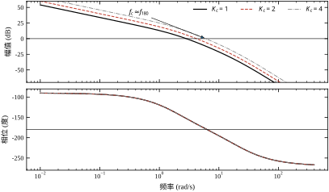
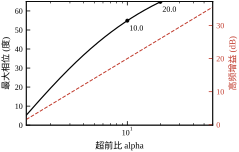
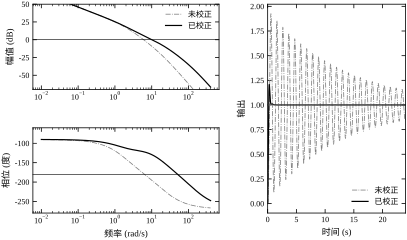
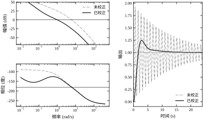
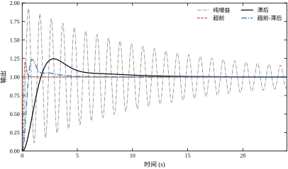
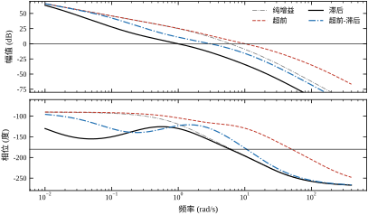
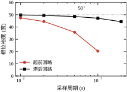
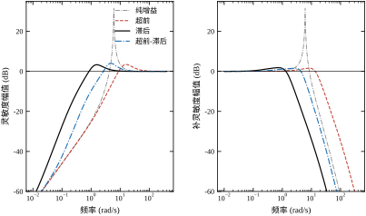
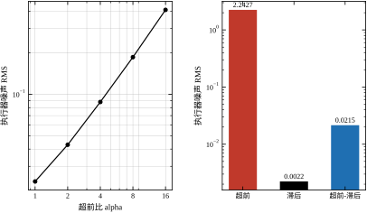
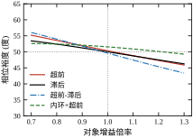

本章的一句话核心思想：校正不是把增益调大，而是在 Bode 图上按频段分配增益——该抬的频段抬上去，该压的频段压下来；抬与压之间隔着一条守恒律，代价最终以相位、噪声或带宽的形式付出去。
第 41 章回答了“增益还能往上加多少”，第 42 章回答了“稳态误差还差多少”。把两章结论并排放到桌上，现场就会冒出第四个问题：
“两个指标我都要，机械不动、电机不换，只在控制器里加一个环节，行不行？”
这个问题的答案就是本章的内容。加进去的那个环节叫校正装置（compensator），也叫校正网络、调节器、补偿器。名字很多，作用只有一个：在不改变对象、不改变反馈结构的前提下，重新分配回路在各个频段上的增益与相位，把 Bode 图“捏”成我们想要的样子。
把话说得更具体一点。本章沿用第 39–42 章的主例对象
G(s)=\frac{10}{s(s+2)(0.05s+1)}\tag{43-1}
要求速度误差系数 K_v=20，也就是单位斜坡输入下稳态误差 e_{ss}=1/20=0.05。第 42 章已经算过，这个要求等价于串联增益 K_c=20/5=4。于是设计任务变成一句话：在 K_c=4 的前提下，把相位裕度从现场测到的水平拉回到 50^{\circ}。
这句任务描述里藏着本章全部的矛盾：K_c 由误差指标锁死，不能动；50^{\circ} 由稳定性指标锁死，也不能让。能动的只剩“频率分布”这一个自由度，而校正装置恰恰只提供这一个自由度。
这里要交代一句设计点的变化。第 41–42 章主例的设计点是 K=0.3888，对应 K_v=1.9440、e_{ss}=0.5144；本章把误差直接收紧到 0.05，增益因此要从 0.3888 抬到 4，即 +20.25 dB。第 42 章 §42.6.2 量过这条价目表的斜率：小段 2.67^{\circ}/\text{dB}；§42.9.5 又量了“把误差压五倍”那种大段，2.43^{\circ}/\text{dB}。按后者外推，+20.25 dB 该掉四十多度；实测 48.065^{\circ}\to1.576^{\circ}，掉 46.5^{\circ}，合 2.30^{\circ}/\text{dB}，比大段斜率还低一点，因为裕度曲线在上凸。方向没有变：§42.9.5 那句“靠增益硬扛误差，必然把系统推到失稳边缘”，再往前走一步，就是本章的开局。
先把矛盾摆成数字。表 43-1 是主例在三档纯比例增益下的实测，全部数值由 code/ch043_sim.py 的 [1] 组打印。
表 43-1 主例在三档纯比例增益下的指标（无校正）
| K_c | K_v | 相位裕度 \varphi_M (°) | 增益裕度 G_M (dB) | 穿越频率 \omega_c (rad/s) | 超调 (%) | 上升时间 (s) | 调节时间 (s) |
|---|---|---|---|---|---|---|---|
| 1 | 5 | 26.997 | 12.87 | 2.8461 | 46.05 | 0.4063 | 5.363 |
| 2 | 10 | 13.571 | 6.85 | 4.2041 | 68.16 | 0.2655 | 7.463 |
| 4 | 20 | 1.576 | 0.83 | 6.0291 | 92.45 | 0.1807 | 49.940 |
第一行是“没使劲”的状态：误差大（e_{ss}=0.2），但裕度 26.997° 还算能跑。第三行是“按误差指标使满劲”的状态：误差刚好达标，相位裕度只剩 1.576°，增益裕度 0.83 dB，超调 92.45%，调节时间从 5.4 s 拖到 49.9 s。
注意最后一项。上升时间从 0.4063 s 缩到 0.1807 s，看起来“更快了”，可调节时间反而涨了近十倍——这是典型的欠阻尼振铃：前沿冲得快，尾巴摆得久。只看上升时间会得出完全相反的结论，这也是第 41 章反复强调“三个时间指标要一起看”的原因。
更要命的是 1.576° 这个数。它意味着回路已经在失稳边缘：增益再涨 0.83 dB（约 10%）就进入自持振荡。现场遇到这种曲线，第一反应不能是“再调调 PID”，因为 PID 的比例项只会把增益继续往上推——方向正好反了。
表 43-1 的结论是一句硬话：靠一个增益旋钮，K_v=20 与 \varphi_M=50^{\circ} 不可能同时成立。 它们之间差着 48.4° 的相位，这 48.4° 必须由别的元件补出来。
有人会说，那就退指标。K_v 从 20 退到 10，K_c=2，裕度 13.571°；再退到 5，K_c=1，裕度 26.997°。精度丢了四倍，裕度只回来 25 度，离 50° 还差 23°。
这条路走不通，可以算得很具体。从表 43-1 的两段实测看，增益每降一半，相位裕度涨 12–13°（4→2 涨 11.995°，2→1 涨 13.426°）。要补 48.4°，得把增益降到原来的约十四分之一（2^{48.4/12.7}\approx14），K_c 变成 0.29，K_v 变成 1.43，稳态误差从 0.05 涨到 0.70。为了换 50° 裕度，要把速度误差精度丢掉一个数量级还多。 任何一个需要跟踪斜坡的场合都不会接受这个结果。
这就是“必须动频率分布”的定量理由。增益只能整条曲线平移，而我们需要的是“某一段抬、另一段压”——这种局部修改能力，只有引入新的零极点才能获得。
既然增益不能动，那就动“增益在频率上的分布”。图 43-1 把三档增益的 Bode 图叠在一起，一眼能看出问题出在哪个频段。

三条幅频曲线形状完全一样，只是整体上下平移——这正是“纯增益”的含义。相位曲线则完全重合，与增益无关：增益只能平移幅频曲线，不能改变相频曲线。
这条性质决定了整章的思路。相位裕度是“在穿越频率处，相位离 -180^{\circ} 还有多远”。增益一抬，穿越频率 \omega_c 就沿着同一条相频曲线往右滑；主例的相频曲线从 -90^{\circ} 一路滑向 -270^{\circ}，所以 \omega_c 越往右，裕度越小。K_c=4 时 \omega_c=6.0291 rad/s，相位已经掉到 -178.4^{\circ}，离 -180^{\circ} 只差 1.576°。
于是“整形”有了两种完全不同的做法：
两种做法对应两套完全不同的代价。前者抬相位要付高频增益（噪声放大），后者压幅值要付带宽（响应变慢）。本章后面所有的表格，本质上都在量化这两笔代价。
顺带说明图 43-1 里那个标注 f_c\approx f_{180} 的意义：K_c=4 时幅值穿越点与相位穿越点几乎重合，两个裕度同时趋零。这是“临界稳定”的图形特征，也是判断“还能不能再加增益”最直观的一眼。
超前校正像开车时的“提前打方向”。它不改变最终能走多快，而是在弯道到来之前先给出一个反向的修正量。数学上它是一个零点在左、极点在右的一阶环节：零点先把相位往上抬，极点在高频再把相位还回去，抬与还之间形成一段“相位鼓包”。鼓包的高度由零极点之比决定，位置由几何中心决定。
它的性格是快而吵：穿越频率被推高，响应变快，但高频增益同步放大，传感器噪声原封不动地灌进执行器。
滞后校正像“给快车让路”。它不抬相位，反而在低频引入一点相位滞后；真正的动作在高频——把高频幅值压低，让幅频曲线提前穿过 0 dB。穿越点左移到相位还富裕的频段，裕度自然回来。
它的性格是稳而慢：裕度漂亮、噪声几乎不放大，但穿越频率被压到 1 rad/s 附近，响应慢一个数量级，而且低频相位滞后会侵蚀一点稳态性能。
超前-滞后校正是两段接力：滞后段负责把高频压下去、把穿越点挪到中间位置，超前段负责在那个位置上再补一点相位。它想要的是“中等的速度 + 中等的裕度”，代价是元件多一倍、设计方程要联立求解。
三种性格的实测差距有多大，§43.4 会用同一张表锁死。这里先给一句预判：在主例这个对象上，超前能把调节时间做到 0.52 s，滞后只能做到 10.9 s，两者差 21 倍；而滞后的执行器噪声只有超前的千分之一。 没有哪种更好，只有哪种更适合当前指标。
把三种性格放在同一把尺子上，代价是可以互相换算的。以三组数作坐标：超前（t_s=0.520 s、高频 155.3 倍、漂移跨度 10.903°）、滞后（10.913 s、0.220 倍、17.623°）、超前-滞后（3.948 s、2.079 倍、21.302°）。从超前换到滞后，时间慢 21 倍，噪声低 706 倍，漂移跨度却变差 1.62 倍；从超前换到超前-滞后，时间慢 7.6 倍，噪声低 74.7 倍，漂移跨度变差 1.95 倍。三列从来不是同向变化的：省了噪声，就要付时间，还得接受漂移变差。 这就是“选结构”不能按单项最优来选的原因——按单项排，每列的第一名都是不同的结构。
校正装置看起来像“免费的午餐”：加两个电阻电容，裕度就从 1.6° 变成 50°。但把三张表放在一起看，会发现一条守恒律：
这条守恒律不是数学定理，而是这三个一阶环节的结构决定的。理解了它，就不会再问“有没有一种校正器既快又稳又不吵”——正确的问法是“在当前指标下，哪一笔代价我最付得起”。
§43.2 把三种校正器的公式一次性推导清楚，重点是“最大相位点”和“高频增益”这两个量的来历。§43.3 给出六步设计流程，每一步都配一个可执行的判据。§43.4 是连续域的实跑：基准、超前、滞后、超前-滞后、四结构同台、反馈与复合，六组数字。§43.5 转入离散域，回答“为什么连续设计直接离散化会崩”以及 w 域设计到底救回了什么。§43.6 讨论两个裕度为什么经常打架，§43.7 逐个参数讲作用方向，§43.8 给调参经验，§43.9 讲改进路线，§43.10 落到运放与定点实现，§43.11 划边界，§43.12 给代码。
读本章前建议先回看第 41 章 §41.6 的裕度定义与 §41.7 的时间指标换算，本章会反复用到 \omega_c、\varphi_M、M_s 这三个量，但不再重复它们的定义。
校正器的物理实现通常是一张 RC 网络，传递函数天然是一阶有理式。想得到二阶特性，工程上更常见的做法是两级一阶串联，而不是直接设计二阶网络——因为一阶的每个参数都有明确的物理对应（一个电阻、一个电容），调试时可以独立拧。
一阶环节还有一个更重要的好处：它只在一个频段内“动手”，两端都回到平坦。 低频增益是常数，高频增益也是常数，中间过渡段的斜率固定为 \pm20 dB/dec。这种“局部作用”的性质让设计可以分解：先算需要补多少、补在哪儿，再算两端的代价，两件事互不纠缠。
代价是补偿能力有限。单个一阶超前最多能给出接近 90^{\circ} 的相位（\alpha\to\infty 时），但那时高频增益也趋于无穷。实际可用的上限大约在 60^{\circ} 附近，再往上就得两级串联，这是 §43.9 的话题。
本章统一采用“零点-极点”形式：
C(s)=K_c\,\frac{1+s/z}{1+s/p}\tag{43-2}
其中 z 是零点（rad/s），p 是极点（rad/s），K_c 是低频增益。三个参数、两条极限：
两个极点位置谁大谁小，决定校正器的性格：
| 条件 | 名称 | 相位 | 高频增益 |
|---|---|---|---|
| p>z | 超前 | 中频为正（鼓包） | K_c\,p/z>K_c，放大 |
| p<z | 滞后 | 全频段为负 | K_c\,p/z<K_c，衰减 |
同一个公式，两种性格，区别只在零极点谁在右。 这一点值得记住，因为它说明校正器的“类型”不是靠元件区分，而是靠参数相对位置区分。现场的 RC 网络焊错了位置，超前会变成滞后，症状是裕度不升反降。
超前的核心问题是“鼓包最高能多高、最高点在哪”。把 s=j\omega 代入式 (43-2)，相位是
\varphi(\omega)=\arctan\frac{\omega}{z}-\arctan\frac{\omega}{p}
对 \omega 求导并令其为零，得到
\omega_m=\sqrt{zp}\tag{43-3}
也就是零极点的几何中心。在这个点上，相位达到最大值 \varphi_m，且满足
\sin\varphi_m=\frac{p-z}{p+z}=\frac{\alpha-1}{\alpha+1},\qquad \alpha=\frac{p}{z}\tag{43-4}
这里 \alpha 叫超前比。式 (43-4) 是本章用得最多的一个公式，它把“要补多少度”和“零极点该差几倍”直接连起来，中间不需要任何其他参数。
同一时刻，校正器的幅值是
\left|C(j\omega_m)\right|=K_c\sqrt{\alpha}\tag{43-5}
这个 \sqrt{\alpha} 很关键：鼓包最高点上的增益正好是两端增益的几何平均。它意味着补偿相位的同时，回路增益在 \omega_m 处被抬高了 \sqrt{\alpha} 倍，穿越频率一定会往右跑——这就是超前“必然提速”的数学来源。
顺带记下高频增益：把 s\to\infty 代入式 (43-2)，得 K_c\alpha。同一个 \alpha，既是相位鼓包的高度，又是高频增益的倍数。 想多补相位，就得多放大噪声，二者由同一个参数绑定，无法分开调节。
把 \alpha 的四个作用列在一起，就能看清超前的全部代价：
最后一条还有一个用处：判断穿越点能偏离 \omega_m 多远。主例的 \omega_c/\omega_m=10.2301/22.516=0.454，落在 -10^{\circ} 边界 0.343 之内，所以校正器在 \omega_c 处还剩 66.37^{\circ}；若 \omega_c 被压到 0.343\omega_m=7.72 rad/s 以下，同样的校正器就只剩 61.76^{\circ}，对付 53.4° 的缺口就几乎没有余量了。
还有一处符号要交代。第 37 章式 (37-28) 也用 \alpha，但那里的 \alpha=T_f/T_d<1 是微分滤波比，本章这个 \alpha=p/z>1 恰好是它的倒数；两处公式的形状一样（\arcsin\frac{1-\alpha}{1+\alpha} 与 \arcsin\frac{\alpha-1}{\alpha+1}），趋势却相反。本章一律按 \alpha>1 走，看到 \alpha 变大时报“相位更多、噪声更大”，就不会读反。
图 43-2 把前两条画在同一张图上：黑线是式 (43-4) 的相位，红虚线是 20\log_{10}\alpha 的高频增益，两者共用横轴。

曲线读法很直接：横轴每翻一倍，相位涨得越来越少，高频增益却固定涨 6.02 dB。这是一条边际收益递减、边际成本恒定的曲线，所以工程上不会无限加大 \alpha，而是在“够用”处停下。
表 43-2 是本章三个候选 \alpha 的实测。注意“名义最大相位”与“实际得到的裕度”不是一回事。
表 43-2 三个超前比的相位能力与实际效果（K_c=4）
| \alpha | 名义最大相位 \varphi_m (°) | 高频增益 (倍) | 实际相位裕度 (°) | 实际补偿量 (°) | 穿越频率 (rad/s) |
|---|---|---|---|---|---|
| 10 | 54.90 | 40.0 | 41.006 | 39.43 | 8.8749 |
| 20 | 64.79 | 80.0 | 46.844 | 45.27 | 9.5900 |
| 38.82 | 71.76 | 155.3 | 50.346 | 48.77 | 10.2301 |
“实际补偿量”是相对未校正的 1.576^{\circ} 算的。它与名义最大相位差 13.9^{\circ}\sim21.4^{\circ}，差距随 \alpha 增大而增大。这笔账可以拆成两项，以 \alpha=38.82 为例：一是校正器在 \omega_c 处只给出 66.37^{\circ}，比峰值 71.76^{\circ} 少 5.4°——因为 \omega_c=10.2301 落在 \omega_m=22.516 的左侧 2.2 倍处，取的是鼓包的上升段；二是穿越点从 6.0291 右移到 10.2301，对象在那里的相位从 -178.42^{\circ} 掉到 -196.03^{\circ}，多吃 17.6°。 两项相加 23.0°，正好等于 71.76 与 48.77 之差。所以设计时不能直接把“缺口 48.4^{\circ}”代入式 (43-4) 求 \alpha，那样算出的 \alpha 会偏小，必须留余量或迭代——这是 §43.3 要给的流程。
滞后网络的形式与式 (43-2) 完全一样，只是 z>p。定义衰减比
\beta=\frac{z}{p}>1\tag{43-6}
它在高频的增益是 K_c/\beta，也就是把高频幅值压低 \beta 倍。设计时不去算相位，而是先定“新的穿越频率 \omega_c' 放在哪”，再令该点的环路增益恰好为 1：
\beta=K_c\left|G(j\omega_c')\right|\tag{43-7}
零点取 \omega_c' 的若干分之一，极点再由 \beta 反推：p=z/\beta。这个“先定 \omega_c'、再定 \beta、最后配零极点”的顺序，是滞后设计与超前设计最大的不同：超前的自变量是相位，滞后的自变量是频率。
零点位置用一个“衰减倍数” d 描述，z=\omega_c'/d。d 越大，零点离穿越点越远，穿越点处的相位滞后越小。表 43-3 是 d=4/5/10 三档的实测，§43.4.3 会逐行解释。
表 43-3 滞后网络零点位置对指标的影响（K_c=4，目标 \varphi_M=50^{\circ}）
| 零点位置 d | 零点 z (rad/s) | 极点 p (rad/s) | 衰减比 \beta | 相位裕度 (°) | 穿越频率 (rad/s) |
|---|---|---|---|---|---|
| 4 | 0.22102 | 0.010693 | 20.671 | 50.000 | 0.9062 |
| 5 | 0.19730 | 0.010864 | 18.160 | 50.000 | 1.0022 |
| 10 | 0.12086 | 0.008550 | 14.137 | 50.000 | 1.2133 |
三行的相位裕度都被精确顶到 50.000^{\circ}——这是式 (43-7) 的直接结果，设计中把 \beta 解到了恰好满足。差别全在别处：d 越大，穿越频率越高（0.9062 → 1.2133），衰减比越小（20.671 → 14.137），响应越快但需要的零极点分离越夸张。
校正器自身在穿越点处的相位也随 d 变化，三档分别是 -13.03^{\circ}、-10.52^{\circ}、-5.28^{\circ}。这就是“滞后网络的相位代价”：零点离穿越点越远，代价越小。d=10 只付 5.28^{\circ}，而 d=4 要付 13.03^{\circ}——相差 7.75^{\circ} 的裕度预算，正是从穿越频率的位置上换来的。三者的时间指标取舍在 §43.4.3 定量。
把两段串起来，C(s)=C_d(s)\,C_l(s)，未知量变成四个（两个零点、两个极点）。工程上通常先固定滞后的零点位置（z_l=\omega_c'/d），再联立两个方程：
\angle C_d(j\omega_c')+\angle C_l(j\omega_c')=-180^{\circ}+\varphi_M-\angle G(j\omega_c')\tag{43-8}
\left|C_d(j\omega_c')\right|\left|C_l(j\omega_c')\right|K_c\left|G(j\omega_c')\right|=1\tag{43-9}
式 (43-8) 管相位、式 (43-9) 管幅值，两个方程解两个未知量（\alpha 与 \beta）。麻烦在于 \beta 藏在 C_l 的极点里，C_l 的相位又依赖 \beta，两个方程通过 \beta 耦合，没有闭式解。
实际做法是固定点迭代：先猜 \beta=1，用式 (43-8) 解出 \alpha，再用式 (43-9) 算新的 \beta，回到式 (43-8) 重解 \alpha，直到 \beta 收敛。design_lead_lag() 里就是这个循环，80 次上限、10^{-12} 的收敛判据。表 43-4 的三组结果都是迭代收敛后的值——这也是为什么超前-滞后的参数看起来“不那么整”。
表 43-4 超前-滞后的迭代解（K_c=4，d=5）
| 目标 \omega_c' (rad/s) | \alpha | z_d (rad/s) | p_d (rad/s) | z_l (rad/s) | p_l (rad/s) | \beta |
|---|---|---|---|---|---|---|
| 2.0 | 2.109 | 1.3772 | 2.9045 | 0.4000 | 0.03915 | 10.218 |
| 3.0 | 3.613 | 1.5783 | 5.7024 | 0.6000 | 0.08631 | 6.951 |
| 4.0 | 5.504 | 1.7050 | 9.3843 | 0.8000 | 0.15552 | 5.144 |
读这张表要注意 \alpha 与 \beta 的反向关系：目标穿越频率越低，需要的超前比越小（5.504 → 2.109），需要的衰减比越大（5.144 → 10.218）。两部分在互相“让”：穿越点越高，对象相位越差，超前段要多干活；同时对象幅值越小，滞后段可以少干活。
速度反馈是另一种思路：不改串联通道，而是把对象的某一段“包”进一个小回路。设内环反馈为 k_t s（测速机），内环闭合后
G_i(s)=\frac{G_m(s)}{1+k_t s\,G_m(s)}
其中 G_m(s)=10/[(s+2)(0.05s+1)] 是去掉积分器的机械+执行器部分。把 K_c 乘进去，整个开环可以写成
L(s)=K_c\,G_i(s)\cdot\frac{1}{s}=K_c\,G(s)\cdot\frac{1}{1+k_t s\,G_m(s)}\tag{43-10}
最后那个因子就是等效串联校正器。它和前面三种有本质区别：它依赖对象 G_m。 对象换了，等效校正器自动跟着换，不需要重新设计。这是反馈校正鲁棒性好的根本原因，也是它无法用一张固定的 Bode 图描述的原因。
积分器留在内环外面，是为了保住型别——这一点很容易做错。如果把积分器也包进内环，闭环后系统会变成型 0，稳态误差直接变成有限值，K_v 失去意义。K_v 的表达式也因此变简单：
K_v=K_c\cdot\frac{10}{2+10k_t}\quad\Longrightarrow\quad K_c=4+20k_t\tag{43-11}
式 (43-11) 说明一件不太直观的事：加了反馈，反而要把前置增益调大。 k_t=0.8 时 K_c 要从 4 涨到 20，涨了 5 倍。原因就在分母那个 2+10k_t：反馈把低频增益压低了多少，前置增益就得补回多少。这一涨一补之间，裕度会发生什么，§43.4.6 的实测会给答案。
这个等效校正器在不同频段上“长什么样”，可以直接把 k_t=0.2 的数值代进去看。它的直流增益是 1/(1+10k_t/2)=0.5，高频增益趋于 1，在 \omega_c=8.4325 处是 0.3592\angle+6.11^{\circ}。
三个数放在一起，得到一条容易被忽略的结论：速度反馈在频域上其实是一个超前环节。 低频被压到 0.5，高频回到 1，中间给出正的相位——形状与超前网络一致，只是它不靠 RC 分压，而靠 \dot\theta 的反馈量在高频自动消失。这也解释了为什么内环既能提高阻尼（给相位），又必然吃掉低频增益（压幅值）：两件事是同一个传递函数的两个面，不能只要一面。
在 k_t=0.2 的复合方案里，外环的超前器要补 54.95^{\circ}、放大 2.7603 倍，而内环等效环节在穿越点提供 6.11^{\circ}、衰减 2.78 倍。两者一乘，净效果是 \alpha 从 38.82 降到 10.31。内环的 6° 只占 55° 里的一小截，它真正省下来的是那 2.78 倍的衰减——衰减让 K_c 可以取到 8 而不把穿越点推高，外环于是不必为一个跑到 10 以上的 \omega_c 付 \alpha。
校正设计最容易犯的错，是拿到指标就开始套公式。公式里的 \alpha 是在“穿越频率不变”的假设下推出来的，可校正器一装上去，穿越频率立刻就变了。所以流程必须把“算”和“验”分开，中间留一个迭代环。
本章采用的六步：
六步里只有第 4 步是“算”，其余五步都是“查”。这不是保守，而是因为一阶校正器的参数与指标之间没有一一映射——同一个 \alpha 放在不同的 \omega_m 上，得到的裕度能差十几度。
主例的 K_v=5K_c，要求 K_v=20，于是 K_c=4，e_{ss}=1/20=0.05。这一步在 §43.2 已经做过，放在流程里是为了强调一件事：K_c 不是可调参数，它是误差指标的直接换算结果。
现场经常出现“先把增益调到不振，再想办法补误差”的做法，结果就是表 43-1 那条路：调到不振时 K_c\approx1，误差 0.2；要误差 0.05 就得 K_c=4，回路已经临界。顺序反了，后面全是补丁。
正确顺序是先锁 K_c，再看裕度差多少。差得多，说明需要校正；差得少，可能只需要微调对象参数。这个判断能省掉大量无效设计。
K_c=4 时穿越频率是 6.0291 rad/s。把对象在这个频率上的相位逐项拆开，就得到缺口的大小。表 43-5 是这份“相位预算”。
表 43-5 K_c=4、\omega_c=6.0291 rad/s 处的相位预算
| 环节 | 传递函数 | 该点相位 (°) | 说明 |
|---|---|---|---|
| 积分器 | 1/s | -90.00 | 与频率无关，恒定贡献 |
| 机械极点 | 1/(s+2) | -71.66 | 极点已在穿越点之下 3 倍 |
| 执行器极点 | 1/(0.05s+1) | -16.77 | 时间常数小，贡献有限 |
| 合计 | — | -178.43 | 距 -180^{\circ} 仅 1.57^{\circ} |
表 43-5 最值得看的是第二行：机械极点 \omega=2 已经在穿越频率之下三倍，贡献了 71.66^{\circ} 滞后。这是全表最大的一笔，也是超前校正必须“顶”住的地方。 想靠抬高穿越频率来解决是行不通的——穿越点越往右，这一项越接近 90^{\circ}，缺口只会更大。
算缺口时有一个常见错误：把目标裕度直接当成“要补的相位”。本例目标 50^{\circ}，现状 1.576^{\circ}，缺口是 48.42^{\circ}，不是 50^{\circ}。少算这 1.6^{\circ} 在校正后会被放大——因为穿越频率右移，实际缺口比静态计算更大。§43.3.5 会给出定量对比。
缺口算出来是 48.4^{\circ}，接下来要选“用哪种方式补”。这不是偏好问题，而是由现场约束决定的。表 43-6 是本章建议的判据。
表 43-6 三种结构的选型判据
| 现场约束 | 首选 | 关键理由 | 主要代价 |
|---|---|---|---|
| 允许提速，传感器噪声小 | 超前 | 相位鼓包直接顶在穿越点上 | 高频增益 =K_c\alpha |
| 高频噪声大，允许变慢 | 滞后 | 只压幅值，高频增益反而降 | 穿越频率退到 1 rad/s |
| 既要速度又要裕度，元件不敏感 | 超前-滞后 | 两段分工，各管一段 | 参数翻倍，需迭代 |
| 对象增益漂移大，能装测速机 | 反馈/复合 | 等效校正器随对象变 | 多一个传感器与内环 |
判据的第一列是“约束”，不是“指标”。指标（50^{\circ}）三种结构都能达到，差别全在约束上。这条区分很重要：如果只按指标选型，三种结构看起来等价；按约束选型，往往只剩一种可选。
主例的具体情况：执行器是电机，噪声主要来自编码器与 PWM，高频放大不可接受；但负载惯量小，提速有余量。两条合起来指向超前-滞后或复合，而不是单纯超前。本章仍把三种都算一遍，目的是让读者看到“同一个指标下三种代价”的完整图景。
超前先按式 (43-4) 粗算。缺口 48.42^{\circ}，取 \alpha=(1+\sin48.42^{\circ})/(1-\sin48.42^{\circ})\approx6.94。按这个值（\omega_m 取使裕度最大的 12.577 rad/s）装上去，实测相位裕度只有 36.813^{\circ}，离目标差 13.2^{\circ}。
原因在 §43.2.3 已经埋下：\alpha 抬高的是 \omega_m 处的相位，而 \omega_m 处增益被抬高了 \sqrt{\alpha}，穿越点右移，\omega_c\ne\omega_m。校正后的 \omega_c 是 8.3846 rad/s，比 \omega_m 高了三成，对象在那里的相位自然更差。反复迭代之后，\alpha 一路涨到 38.82，比初值大 5.59 倍，裕度才到 50.346^{\circ}。
这个 5.6 倍就是“朴素公式”与“工程设计”的差距。它不是公式错了，而是公式的前提（穿越频率不变）不成立。凡是“用校正器改相位”的设计，都必须把穿越频率的移动一起算进去。
design_lead() 用的是二维扫描：\alpha 取 34 个对数点（1.5–80），\omega_m 取 90 个对数点（0.3–60），对每个组合算一次裕度，取“能达到目标的最小 \alpha”。这个做法比解析迭代慢，但不会陷进局部解，也能顺带回答“这个对象到底能不能用单级超前做到 50^{\circ}”——答案是能，但 \alpha 已经大得离谱。
还有一条更容易犯的错，值得单独摆出来。既然知道穿越点会右移，就有人“聪明”一点：先把 \omega_m 直接放在设计目标 \omega_c'=10.2301 上，再按那里的相位缺口算 \alpha。这个做法比第一种更像样，结果仍然不够。
算一遍。在 \omega=10.2301 处，|G|=0.083489，K_c|G|=0.33396，\angle G=-196.028^{\circ}。要在那里拿到 50^{\circ} 裕度，校正器必须补 50^{\circ}-180^{\circ}+196.028^{\circ}=66.03^{\circ}。由式 (43-4) 反解得 \alpha=22.19，相应 z=2.1719、p=48.1871。装上去实测 \varphi_M=37.052^{\circ}，\omega_c=14.3613——离目标还差 12.9°，而且穿越点又跑到 14.36 去了。
两次尝试的欠账几乎一样：第一次差 13.2°，第二次差 12.9°。这不是巧合，而是“忽略二次移动”的系统性偏差。 \omega_c 抬高会继续消耗掉一部分新补的相位，而估算时只算了第一次移动。工程上有两种对付办法：一是按 1.3–1.5 倍的余量先把 \alpha 放大，装上去再微调；二是干脆迭代或扫描，让算法去收敛。本章的 design_lead() 选了后者，代价是算得慢，好处是不用猜余量。
滞后的算法完全不同，它不需要迭代相位：先扫描 \omega_c'，对每个候选算 \beta=K_c|G(j\omega_c')|，装上去量裕度，几何二分找到“裕度刚好等于 50^{\circ}”的那个 \omega_c'。60 次二分把区间压到 10^{-15} 量级，所以表 43-3 的三行裕度都是 50.000^{\circ}，不是巧合。
超前-滞后按 §43.2.5 的联立方程迭代，先固定 \omega_c' 与 d，再解 \alpha 与 \beta。注意此时 \omega_c' 是人为指定的，不是算出来的——这给了设计者一个额外的自由度：想要多快，就把 \omega_c' 定多高。表 43-4 的三行就是这个自由度的三个取值。
参数算完不算完，必须先做一次上限预判，再过三道校验。
第零道是上限预判，动手之前做。 单级超前不是万能的：K_c=4 时把 \alpha 从 2 扫到 80、\omega_m 从 0.5 扫到 60，相位裕度的最高点只有 52.572^{\circ}，出现在 \alpha=80、\omega_m=30.06 处，此时高频增益已经 320 倍。这条上限决定了目标值的合法范围，三个参考点足够画出一条成本曲线：45° 要 \alpha=15.655（高频 62.6 倍），52° 要 \alpha=64.045（256.2 倍），再往上就没有了。从 45° 到 52° 只多 7°，代价是高频增益翻 4 倍——这就是本章把目标定在 50° 而不是 55° 的原因。50° 在细网格上的最小值是 36.05，本章的 38.82 是粗网格 \alpha 序列上的第一格，两者差 8%，对结论没有影响，但说明“设计值”从来不是“最优值”，只是“够用的那一格”。
上限为什么存在？两个原因叠在一起：\alpha 增大让鼓包变高，峰位却钉在 \omega_m 不动（z=\omega_m/\sqrt{\alpha} 左移、p=\omega_m\sqrt{\alpha} 右移），而 \omega_c 被高频增益推着一直往右走。一旦 \omega_c 越过 \omega_m，相位取的就是鼓包的下降段——峰再高，取的也是下坡上的值。 §43.9.1 表 43-22 里 \varphi_M 在 \alpha=4 处见顶、之后回落，就是同一个机理在固定 \omega_m 下的表现。
第一道是裕度。 相位裕度、增益裕度、穿越频率三个数一起看。只看相位裕度会漏掉增益裕度不足的情形——§43.4.6 的反馈校正就是典型：k_t=0.8 时增益裕度 5.20 dB 看着还行，相位裕度只有 1.210^{\circ}，闭环超调 96.27\%。两个裕度必须同时达标。
第二道是 M_s=\max|1/(1+L)|。 它把“裕度”和“超调”两个指标统一到一个数上。主例的实测：纯增益 M_s=37.931，超前 1.487，滞后 1.465，超前-滞后 1.587。工程上 M_s<2（约 6 dB）是常用的验收线，四个数里除了纯增益全部合格。
第三道是时域。 阶跃响应的超调、上升时间、调节时间。频率域指标好看、时域却振铃的例子不少，原因是非最小相位零点或带宽外的谐振，一阶校正器本身不会引入这些，但对象可能有。
三道都过，才算收敛；任何一道不过，回到第 3 步换结构，而不是在第 4 步硬调参数。结构错了，参数怎么调都是错的——这是本章最想传递的一条经验。
“迭代”在这里不是“调参”，是把隐式方程解出来。 三种结构对应三种解法，收敛速度差得很远：
design_lead() 一次要算三千多次裕度，是本章所有脚本里最慢的一步。这三组收敛数据说明一件事：本章的“设计”没有一处靠手感，全部是可复现的数值解。 现场手算时用 §43.8.5 的三条校核代替；写代码时照抄这三个循环即可。反过来说，如果换了对象后迭代不收敛，那不是参数问题，是目标本身不可达——回到第零道。
表 43-7 是四个超前比的完整实测。四组参数由 design_lead() 与固定 \alpha 的扫描分别给出，K_c=4 始终不变。
表 43-7 超前校正的四档实测（K_c=4，K_v=20）
| \alpha | z (rad/s) | p (rad/s) | \omega_m (rad/s) | \varphi_M (°) | G_M (dB) | \omega_c (rad/s) | 超调 (%) | t_r (s) | t_s (s) | M_s | 高频增益 (倍) |
|---|---|---|---|---|---|---|---|---|---|---|---|
| 6.94 | 4.7743 | 33.1337 | 12.577 | 36.813 | 13.81 | 8.3846 | 38.01 | 0.1286 | 0.873 | 1.887 | 27.8 |
| 10 | 4.3963 | 43.9630 | 13.902 | 41.006 | 15.24 | 8.8749 | 32.34 | 0.1230 | 0.768 | 1.741 | 40.0 |
| 20 | 3.9534 | 79.0672 | 17.680 | 46.844 | 18.67 | 9.5900 | 24.89 | 0.1175 | 0.538 | 1.571 | 80.0 |
| 38.82 | 3.6137 | 140.2941 | 22.516 | 50.346 | 22.37 | 10.2301 | 20.73 | 0.1141 | 0.520 | 1.487 | 155.3 |
第一行对应“朴素公式”的结果：\alpha=6.94，名义最大相位 48.43^{\circ}，看起来刚好够；实测只有 36.813^{\circ}。这一行是本章第一个“公式与实测不符”的证据。
往下三行，\alpha 从 6.94 涨到 38.82（5.59 倍），收益是：相位裕度 36.813^{\circ}\to50.346^{\circ}（+13.5°），超调 38.01\%\to20.73\%（−17.3 个百分点），调节时间 0.873\to0.520 s（−40%）。代价是高频增益 27.8\to155.3 倍（5.6 倍），G_M 从 13.81 涨到 22.37 dB。
注意 G_M 是跟着变好的。超前的极点在高频，它把高频幅值抬高，同时也把 -180^{\circ} 穿越点往更高频推，而那里对象幅值已经很小，所以增益裕度反而增加。这是超前的一个附带好处，但不要把它当成主要理由——G_M 在很多对象上并不这么听话。
从第一行到第二行，\alpha 只涨 44%，超调从 38.01% 掉到 32.34%，改善不算小；从第三行到第四行，\alpha 接近翻倍，超调只从 24.89% 降到 20.73%，调节时间只从 0.538 s 降到 0.520 s。这就是 §43.1.5 说的边际收益递减，在表里表现为最后一段“花钱多、办事少”。
图 43-3 是 \alpha=38.82 这一组的 Bode 图与阶跃响应。左上是幅频，左下是相频，右侧是时域。

相位图上那段鼓包非常显眼：从 3.61 rad/s 起抬，到穿越点 10.2301 rad/s 时已经给出 66.37^{\circ}，峰顶在 22.5 rad/s 处才到 71.76^{\circ}，然后回落。穿越点落在鼓包的上升段——这正是“名义最大相位”与“实际补偿量”之间那 21.4° 差距的图形解释。
幅频图上，校正后的曲线在低频与未校正重合（K_c 相同），中频抬升，高频一路抬到 +43.8 dB（即 |C(\infty)|=155.3 倍，比未校正的 K_c=4 高出 31.8 dB）。这条“翘尾巴”就是噪声代价的直接图像。
表 43-8 是三档 d 的完整实测，参数来自 design_lag() 的几何二分。
表 43-8 滞后校正的三档实测（K_c=4，目标 \varphi_M=50^{\circ}）
| d | z (rad/s) | p (rad/s) | \beta | \varphi_M (°) | G_M (dB) | \omega_c (rad/s) | 超调 (%) | t_r (s) | t_s (s) | M_s | 校正器相位 (°) |
|---|---|---|---|---|---|---|---|---|---|---|---|
| 4 | 0.22102 | 0.010693 | 20.671 | 50.000 | 26.07 | 0.9062 | 25.54 | 1.2306 | 10.678 | 1.439 | −13.03 |
| 5 | 0.19730 | 0.010864 | 18.160 | 50.000 | 25.07 | 1.0022 | 24.58 | 1.1297 | 10.913 | 1.465 | −10.52 |
| 10 | 0.12086 | 0.008550 | 14.137 | 50.000 | 23.28 | 1.2133 | 21.88 | 0.9696 | 11.940 | 1.513 | −5.28 |
三行的相位裕度完全一样，增益裕度却差 2.79 dB，穿越频率差 34%，调节时间差 11.8%。“相位裕度达标”远不等于“设计完成”，这张表是最好的证据。
有一个反直觉的现象：d=4 的上升时间最长（1.2306 s），调节时间却最短（10.678 s）；d=10 的上升时间最短（0.9696 s），调节时间最长（11.940 s）。原因是调节时间由最慢的闭环极点决定，而 d 越小，零点越靠近穿越点，闭环主导极点的阻尼越大、振铃衰减越快。快慢是两件事：前沿快慢看带宽，尾巴长短看阻尼。
时间尺度上还有一个必须接受的现实：滞后的调节时间在 10.7–11.9 s，是超前的 20 倍。这不是参数没调好，而是 \omega_c 被压到 1 rad/s 的必然结果——闭环带宽大致正比于 \omega_c，带宽低 10 倍，时间就长 10 倍。
图 43-4 是 d=5 这一组的 Bode 图与阶跃响应，可以和图 43-3 对照着看。

幅频图上，校正后的曲线在低频与未校正重合，中频开始下压，高频压到 K_c/\beta=0.2203（比未校正的 K_c=4 低 25.2 dB）。相频图上多了一段负相位，最低点在 0.2 rad/s 附近，然后回升——穿越点 1.0022 rad/s 落在这段回升区，所以只吃了 -10.52^{\circ}。
阶跃响应的时间轴要拉到 24 s 才看得完整，而图 43-3 的横轴同样是 24 s，曲线早已稳定。两张图的横轴一样、曲线占据的比例完全不同，这个视觉差比任何数字都更直观地说明“滞后是用时间换裕度”。
超前-滞后多了一个自由度：目标穿越频率 \omega_c' 由设计者指定。表 43-9 是 \omega_c'=2/3/4 三档的实测。
表 43-9 超前-滞后的三档实测（K_c=4，d=5）
| \omega_c' (rad/s) | \alpha | z_d (rad/s) | p_d (rad/s) | z_l (rad/s) | p_l (rad/s) | \beta | \varphi_M (°) | G_M (dB) | \omega_c (rad/s) | 超调 (%) | t_s (s) | M_s |
|---|---|---|---|---|---|---|---|---|---|---|---|---|
| 2.0 | 2.109 | 1.3772 | 2.9045 | 0.4000 | 0.03915 | 10.218 | 49.599 | 19.03 | 2.0328 | 24.19 | 5.893 | 1.568 |
| 3.0 | 3.613 | 1.5783 | 5.7024 | 0.6000 | 0.08631 | 6.951 | 49.584 | 16.80 | 3.0488 | 23.61 | 3.948 | 1.587 |
| 4.0 | 5.504 | 1.7050 | 9.3843 | 0.8000 | 0.15552 | 5.144 | 49.596 | 15.70 | 4.0641 | 23.24 | 2.863 | 1.595 |
三行的相位裕度都稳定在 49.6^{\circ} 附近，超调都在 23%–24%，M_s 都在 1.57–1.60。变的是速度：\omega_c' 从 2 提到 4，调节时间从 5.893 s 降到 2.863 s，降了一半。
代价在 G_M 上：19.03 → 15.70 dB，降了 3.33 dB。原因还是穿越点上移——\omega_c 越靠近执行器极点，高频段的相位下降越快，能容忍的增益倍数就越小。
这张表还回答了一个选型问题：如果指标只要求“裕度 50°、超调 25%”，超前-滞后在 \omega_c'=4 时给出 2.863 s，比超前的 0.520 s 慢 5.5 倍，但高频增益只有 K_c\alpha/\beta=4\times5.504/5.144\approx4.3 倍，约是超前的三十六分之一。 这就是它存在的理由：在速度和噪声之间找一个双方都能接受的中间点。
注意 \beta 与 \alpha 的反向变化（5.144 与 5.504，10.218 与 2.109）。这不是巧合：\omega_c' 越高，对象幅值越小，滞后段需要压的倍数越少；同时对象相位越差，超前段需要补的越多。两段此消彼长，总代价大致守恒。
把 \omega_c'=3 这一组的账在穿越点 \omega_c=3.0488 处拆开，能看清“两段接力”到底是怎样接的：
这张流水账说明三件事。第一，滞后段压掉的 16.68 dB 并不是白压：没有它，|L| 会是 4\times1.9182\times0.889274=6.82，穿越点还在 4 rad/s 以上，超前的 34.5^{\circ} 救不回来。第二，超前段只补回了 5.66 dB，净效果仍是 -11.02 dB——它与滞后段的幅值作用方向相反，但量级差了三倍，所以净结果是“压”。第三，两段的相位贡献相加是 +24.99^{\circ}，而不是“滞后拉后腿、超前全顶上”：滞后段的 -9.5^{\circ} 确实吃掉了超前的四分之一，但它在幅值上换回来的更多。
这也解释了为什么超前-滞后的 \alpha 比单级超前小得多（3.613 对 38.82）：它需要的净相位只有 25.0^{\circ}，而不像单级超前那样要在高得多的 \omega_c 处补 66.4^{\circ}。穿越频率的选择，等价于选择了“要补多少相位”。
把前面三组的最优解与纯增益放在一起，K_v 全部锁在 20，得到表 43-10。这是本章最该记住的一张表。
读这张表之前，先把它和第 41 章表 41-13 分清楚。那张表也对比了四种补偿器，但前提正好相反：那里把 \varphi_M 全锁在 50^{\circ}，让增益自由（比例 0.3578、超前 3.0343、滞后 0.0112、超前-滞后 2.0053）；本表把 K_v 全锁在 20，让裕度自由。前者的问法是“给定裕度，哪种结构最省”，后者的问法是“给定精度，哪种结构最稳”。 两张表的 \omega_c 因此整体错开：表 41-13 从 0.2006 到 4.2155，表 43-10 从 1.0022 到 10.2301；除超前-滞后那一行几乎重合（3.0488 对 3.1155）之外，其余三行都比前者靠右一大截——因为 K_v 从 1.94 抬到 20，整条幅频曲线先被抬高了 20 dB。这不是矛盾，而是同一道题的两种问法：现场先定哪一头，就查哪一张。
表 43-10 四种结构在同一 K_v=20 下的对照
| 结构 | \varphi_M (°) | G_M (dB) | \omega_c (rad/s) | M_s | 超调 (%) | t_r (s) | t_s (s) | 高频增益 (倍) |
|---|---|---|---|---|---|---|---|---|
| 纯增益 | 1.576 | 0.83 | 6.0291 | 37.931 | 92.45 | 0.1807 | 49.940 | 4.000 |
| 超前 | 50.346 | 22.37 | 10.2301 | 1.487 | 20.73 | 0.1141 | 0.520 | 155.292 |
| 滞后 | 50.000 | 25.07 | 1.0022 | 1.465 | 24.58 | 1.1297 | 10.913 | 0.220 |
| 超前-滞后 | 49.584 | 16.80 | 3.0488 | 1.587 | 23.61 | 0.3680 | 3.948 | 2.079 |
四个“第一”分散在不同列，没有哪一行能全拿：
把六列的极差算出来，还能看出这张表的“不公平”：t_s 的最好与最差相差 96 倍（0.520 对 49.940），高频增益相差 706 倍（155.292 对 0.220），而相位裕度的差距只有 48.8°。极差越大的列，越不可能是“顺便兼顾”来的，它一定由结构决定。 时间与噪声属于这一类，裕度属于“只要肯付代价就能买到”的那一类。
还有一处容易看反：超调最低（20.73%）的是超前，M_s 最小（1.465）的却是滞后。M_s 只描述频域的谐振峰，超调还取决于闭环零点与阻尼，两者排序不一致，正好说明 §43.6.5 那条“从裕度到超调”的换算只在同一结构内部可信，跨结构比较会失灵。判“稳不稳”用 M_s，判“跳多高”必须看时域。
这张表的正确读法是“按约束挑行”，不是“按总分挑行”。 现场如果噪声预算是 10 倍以内，超前直接出局（155.3 倍）；如果时间是硬指标（比如 1 s 内必须到位），滞后直接出局（10.9 s）。剩下的候选往往只有一个。
图 43-5 与图 43-6 分别从时域与频域展示这四条曲线。


时域图上，纯增益那条在 0.18 s 冲到接近 2.0，然后在 1.9 附近长时间振铃——t_s=49.940 s 不是它“还在动”，而是它一直没进 ±2% 带。超前那条几乎是一条带小过冲的指数上升；滞后那条慢得像另一个系统；超前-滞后居中。
图 43-6 值得逐段读，因为它把三种校正器的“作用频段”画得很清楚。
低频段（<0.1 rad/s）：四条曲线完全重合。这不是巧合，而是设计的硬约束——所有方案的 K_c 都是 4，低频增益必须相同，否则 K_v 就变了。校正器只在低频以外动手。
中频段（0.1–5 rad/s）：滞后那条最先掉下去，因为它的零点在 0.1973 rad/s 就开始压幅值；超前-滞后在 0.6 rad/s 附近也掉，但幅度小；超前那条不掉，反而在 3.6 rad/s 之后往上抬。
高频段（>10 rad/s）：超前那条一路抬到 +43.8 dB，滞后那条压在 -13.1 dB（比纯增益的 +12.0 dB 还低 25.2 dB），超前-滞后落在 +6.4 dB。这一段的高度直接对应噪声放大倍数，也是三条曲线差别最大的地方。
相位图：滞后那条有一段明显的“下凹”，最低点在 0.2 rad/s 附近；超前那条有一段明显的“上凸”，顶点在 22.5 rad/s；超前-滞后则是一个“先下后上”的 S 形。三种形状对应三种补偿机制，看相位曲线就能判断装的是哪种校正器。
还有一个细节容易被忽略：四条曲线的相位在高频都趋于 -270^{\circ}（三个极点），但趋近的速度不同。滞后那条趋近得最慢，因为它的极点在最左边（0.010864 rad/s），对高频几乎没影响；超前那条趋近得最快，因为它的极点在 140.2941 rad/s，高频段相位已经回落。
反馈校正的实测分三组，全部在 [5b] 段打印。第一组固定 K_v=20，看 k_t 变化时会发生什么。
表 43-11 速度反馈内环（固定 K_v=20，K_c=4+20k_t）
| k_t | K_c | \varphi_M (°) | G_M (dB) | \omega_c (rad/s) | 超调 (%) | t_r (s) | t_s (s) |
|---|---|---|---|---|---|---|---|
| 0.1 | 6 | 2.926 | 2.92 | 5.3417 | 91.65 | 0.1969 | 28.791 |
| 0.2 | 8 | 2.586 | 3.81 | 5.0774 | 92.89 | 0.2052 | 34.029 |
| 0.4 | 12 | 1.909 | 4.61 | 4.8494 | 94.88 | 0.2132 | 48.587 |
| 0.8 | 20 | 1.210 | 5.20 | 4.6875 | 96.27 | 0.2197 | 59.877 |
| 1.2 | 28 | 0.881 | 5.44 | 4.6229 | 96.61 | 0.2226 | — |
这张表最刺眼的地方是：增益裕度从 2.92 dB 一路涨到 5.44 dB，相位裕度却从 2.926° 掉到 0.881°，超调从 91.65% 涨到 96.61%。两个裕度给出了相反的结论。 原因在 §43.6.1 展开，这里先记住现象。
第二组固定 K_c=4，只看内环本身的效果。
表 43-12 速度反馈内环（固定 K_c=4，K_v 随 k_t 下降）
| k_t | K_v | \varphi_M (°) | G_M (dB) | \omega_c (rad/s) | 超调 (%) | t_s (s) | 内环极点 (rad/s) |
|---|---|---|---|---|---|---|---|
| 0 | 20.00 | 1.576 | 0.83 | 6.0291 | 92.45 | 49.940 | −20.0，−2.0 |
| 0.1 | 13.33 | 6.581 | 6.44 | 4.3500 | 83.15 | 15.198 | −41.025，−0.975 |
| 0.2 | 10.00 | 6.987 | 9.83 | 3.5787 | 82.43 | 17.591 | −61.348，−0.652 |
| 0.4 | 6.67 | 6.453 | 14.15 | 2.7917 | 83.72 | 24.751 | −101.6063，−0.3937 |
| 0.8 | 4.00 | 5.345 | 19.18 | 2.0920 | 86.46 | 39.157 | −181.78，−0.220 |
| 2.0 | 1.82 | 3.757 | 26.49 | 1.3754 | 102.54 | 58.700 | −421.91，−0.0948 |
不加前置增益补偿时，内环确实起了作用：相位裕度从 1.576° 提到 6.987°（k_t=0.2），超调从 92.45% 降到 82.43%。但代价是 K_v 从 20 掉到 10——误差翻倍。 这就是式 (43-11) 的另一面：反馈把低频增益吃掉了。
再看内环极点：k_t=0.2 时是 −61.348 与 −0.652，一快一慢，慢的那个从 −2.0 退到 −0.652。速度反馈把快速极点推得更快，却把慢速极点拖得更慢，这两件事同时发生，所以相位裕度只改善了 5.4°。
第三组是复合校正：内环照旧，外环加一级超前，K_c 按式 (43-11) 补回 K_v=20。表 43-13 是实测，最后一列是“对象增益 +40% 后的相位裕度跌了多少”。
表 43-13 复合校正（内环 k_t + 外环超前，K_v=20）
| k_t | \alpha | z (rad/s) | p (rad/s) | \varphi_M (°) | G_M (dB) | \omega_c (rad/s) | t_s (s) | 增益 +40% 后 \varphi_M (°) | 跌幅 (°) |
|---|---|---|---|---|---|---|---|---|---|
| 0 | 38.82 | 3.6137 | 140.2941 | 50.35 | 22.37 | 10.230 | 0.520 | 37.85 | 12.498 |
| 0.1 | 11.63 | 3.4051 | 39.6180 | 50.60 | 18.32 | 8.749 | 0.780 | 45.53 | 5.074 |
| 0.2 | 10.31 | 3.1580 | 32.5716 | 51.55 | 20.02 | 8.433 | 0.853 | 48.39 | 3.159 |
| 0.4 | 9.14 | 2.9747 | 27.1975 | 51.49 | 23.09 | 8.077 | 0.903 | 49.42 | 2.067 |
| 0.8 | 8.11 | 2.8776 | 23.3231 | 50.44 | 27.37 | 7.734 | 0.923 | 48.90 | 1.535 |
这张表是本章最有价值的一组数据。加一个 k_t=0.2 的速度内环，外环超前比从 38.82 降到 10.31（降 3.8 倍），相位裕度反而略高（51.55° vs 50.35°）。代价是调节时间从 0.520 s 涨到 0.853 s（+64%）。
但噪声账不能只看 \alpha。复合校正的前置增益是 K_c=4+20k_t=8，不是 4；校正器的高频增益是 K_c\alpha=8\times10.31=82.5 倍，相对单级的 155.3 倍只降了 1.88 倍，不是 3.8 倍。\alpha 省下的那一半，被补 K_v 的前置增益又收回去了——这是式 (43-11) 的必然结果，绕不过去。同一套离散仿真口径（T_s=0.02、噪声 0.01）实测：单级超前的执行器 u 的 RMS 是 2.24274，复合是 0.96854，降 2.32 倍。比 1.88 倍还多一点的这部分，来自内环把对象的高频滚降变陡了：等效对象在 10^3 rad/s 以上的衰减更快，噪声经过它时多掉了一截。
更关键的是最后一列：对象增益 +40% 时，纯超前的裕度跌 12.498°，复合只跌 3.159°——鲁棒性提升约 4 倍。这就是 §43.2.6 说的“等效校正器随对象变”的实测证据：内环自己会跟着对象增益调整，外环不需要知道。
前面四节的所有数字都建立在“校正器是一个连续传递函数”这个假设上。现场不成立。校正器要么用运放加阻容搭出来（连续，但受元件容差与漂移限制），要么写进单片机（离散，必须先变成差分方程）。后者要迈的第一道坎是离散化，而离散化会引入一个连续世界里根本不存在的惩罚——采样延迟。
用一句话概括：采样周期 T_s 把控制作用平均拖后半个采样周期，这段延迟落在穿越频率处就折算成相位损失。损失量既与穿越频率成正比，也与采样周期成正比，与校正器是超前还是滞后无关。这个“与类型无关”的性质很关键，它说明采样惩罚是回路的性质，不是元件的性质。
先算量级。本章的超前校正把穿越频率推到 10.2301 rad/s，一个采样周期内相位推进 \omega_cT_s 弧度；零阶保持器平均滞后半个周期，于是
\Delta\varphi\approx\frac{\omega_cT_s}{2}\ \text{(rad)}=\frac{180\,\omega_cT_s}{2\pi}\ \text{(°)}\tag{43-12}
按式 (43-12)，要让损失不超过 5°，需要 T_s<0.1745/\omega_c。代进 \omega_c=10.2301，得 T_s<0.0171 s，采样率高于 58 Hz。这个结论比多数人的直觉严格得多：带宽 10.23 rad/s 只合 1.63 Hz，按“采样比带宽快十倍”的经验给 16 Hz，损失已经 18°。
滞后校正的处境完全相反。它的穿越频率是 1.0022 rad/s，同样的 5° 预算允许 T_s<0.174 s，放宽了一个数量级。同一个采样周期，对超前是灾难，对滞后几乎无感——这不是巧合，而是式 (43-12) 里那个 \omega_c 的直接后果。
最省事的做法是：连续域设计好 C(s)，用双线性变换直接搬进 z 域，对象用零阶保持器离散，然后在单位圆上数裕度。表 43-14 是四档采样周期的实测（[6] 段），首行是连续域的基准。
表 43-14 同一连续校正器直接 Tustin 后的数字域裕度
| T_s (s) | 滞后 \varphi_M (°) | 滞后 G_M (dB) | 滞后 \omega_c (rad/s) | 超前 \varphi_M (°) | 超前 G_M (dB) | 超前 \omega_c (rad/s) |
|---|---|---|---|---|---|---|
| 连续 | 50.000 | 25.07 | 1.0022 | 50.346 | 22.37 | 10.2301 |
| 0.02 | 49.460 | 23.36 | 1.0001 | 44.516 | 14.15 | 10.2367 |
| 0.05 | 48.584 | 21.35 | 1.0012 | 35.743 | 8.49 | 10.3006 |
| 0.10 | 47.156 | 18.84 | 1.0012 | 20.347 | 3.26 | 10.5750 |
| 0.20 | 44.324 | 15.43 | 1.0006 | 失稳 | −2.37 | — |
滞后那一半几乎不受影响：T_s=0.20 这样粗的周期，裕度也只掉 5.676°，穿越频率几乎不动。超前那一半是另一回事：T_s=0.02 就掉 5.830°，T_s=0.10 掉 29.999°，T_s=0.20 时相位裕度已经不存在——增益裕度是负的 −2.37 dB，回路本来就振荡了。
把损失与式 (43-12) 的预测并排放，会发现两列几乎重合：
| T_s | 滞后实测损失 | 式 (43-12) 预测 | 超前实测损失 | 式 (43-12) 预测 |
|---|---|---|---|---|
| 0.02 | 0.540 | 0.573 | 5.830 | 5.865 |
| 0.05 | 1.416 | 1.434 | 14.603 | 14.755 |
| 0.10 | 2.844 | 2.868 | 29.999 | 30.295 |
| 0.20 | 5.676 | 5.733 | 失稳 | 约 58.4 |
七组可用数据的偏差都在 0.3° 以内，而且偏的方向一致——实测总比预测略小，因为穿越点在损失发生后会轻微左移，自己把损失压回去一点。这张表的意义是：采样惩罚不是一种模糊的“性能下降”，它是半拍延迟的几何后果，可以在设计之前算清。 只要算出来不超过预算，离散实现就是安全的；算出来超了，再怎么调 Tustin 的公式都救不回来。
图 43-7 把表 43-14 画成曲线，横轴是采样周期，纵轴是相位裕度。两条线的形状差别一目了然：滞后那条几乎是水平线，超前那条在 0.05 s 之后陡降。

图上还有一处值得注意：超前那条线在 T_s=0.05 到 0.10 之间斜率最大，恰好落在“工程上最常用”的采样周期区间。多数 PLC 的快速任务周期是 50–100 ms，多数单片机的控制中断是 10–20 ms；前者对超前校正已经致命，后者也只是勉强。选采样周期时不能用“比带宽快十倍”这种模糊口径，得用式 (43-12) 算。
表 43-14 里超前在 T_s=0.20 时直接失稳，值得单独看一眼原因。
双线性变换把 s 平面的虚轴卷到单位圆上，把 s\to\infty 映到 z=-1。超前校正器的极点在 p=140.2941 rad/s，映射公式是
z_p=\frac{1-pT_s/2}{1+pT_s/2}
四档采样周期下，这个极点离原点的距离分别是 0.1677、0.5563、0.7505、0.8669。数字是单调上升的，而且上升得很快：T_s 每翻一倍，极点就明显往 −1 逼近一步。零点的情况相反，z=3.6137 映射后落在正实轴的 0.8343（T_s=0.05）与 0.4691（T_s=0.20）上，始终在右半圆。
零极点分居实轴两侧，这是离散超前器与连续超前器最本质的区别。连续域里，零点与极点都在负实轴上，相位贡献是一段从 0 抬到 +90^{\circ}、再回落到 0 的“鼓包”。离散域里，零点跑到正实轴，相位从 0 出发先向负方向走一段（因为极点更靠近 −1），再被零点拉回来——鼓包变成了一段跨过整个上半圆的斜坡，峰值自然下降，形状自然变平。
所以“离散后失稳”不是校正器本身坏了。四档下 |z_p| 都小于 1，校正器自己是稳定的。坏的是它与延迟的配合：极点越靠近 −1，它在 Nyquist 频率附近的相位就越陡；叠加零阶保持器的半拍延迟之后，回路在 \omega_c 附近一路穿过 -180^{\circ}，再也回不来。
最不划算的地方在这里：Tustin 保持 C(\infty) 不变，高频增益一点没少，相位收益却被削掉一大半。 表 43-10 里超前的高频增益是 155.3 倍，T_s=0.20 时这个倍数还在，可裕度从 50.346° 变成负的。付了噪声的钱，没买到稳定。
既然问题出在频率轴的折叠上，那就把它重新摊平。w 变换就是干这件事的：先做 Tustin 的逆运算，再把结果投到一条新的虚轴上，
z=\frac{1+hw}{1-hw},\qquad h=\frac{T_s}{2},\qquad \omega_w=\frac{2}{T_s}\tan\frac{\omega T_s}{2}\tag{43-13}
这个变换有两个性质，决定了它在工程上的地位。
第一，它是恒等映射。z 域某点 z=e^{j\omega T_s} 与 w 域某点 w=j\omega_w 严格对应同一个复数，频率响应完全相等。所以离散系统的裕度可以在 w 域里用连续域的全套工具算——Bode 图、相位计算公式、§43.2 的 \alpha 与 \omega_m 关系，一个都不用改。
第二，它是频率预畸变。\omega 从 0 走到 \pi/T_s，\omega_w 从 0 走到 \infty；低频段 \omega_w\approx\omega，高频段 \omega_w 被拉伸。表 43-15 是 T_s=0.05 的四点校验（[7] 段）。
表 43-15 z\to w 变换的频率校验（T_s=0.05 s）
| \omega (rad/s) | \omega_w (rad/s) | 相对拉伸 | 相位差 (°) | \omega T_s/2 (°) |
|---|---|---|---|---|
| 0.5 | 0.500 | 0.0% | −0.716 | 0.716 |
| 1.0 | 1.000 | 0.0% | −1.432 | 1.432 |
| 2.0 | 2.002 | +0.1% | −2.865 | 2.865 |
| 5.0 | 5.026 | +0.5% | −7.163 | 7.163 |
最后一列是照抄式 (43-12) 算出来的半拍延迟。两列数字一模一样，这不是拟合出来的，而是必然的：G_w 是零阶保持器离散对象的 w 变换，它当然含有那半拍延迟；w 变换只是把这个延迟原封不动地搬到新坐标里。
顺带核对幅值。\omega=0.5 处 |G_w|=9.698141，|G|=9.698395，相对差 2.6\times10^{-5}，纯数值误差。这说明 z→w 的代数运算没有引入任何近似，表里那 7.163° 的相位差全部来自零阶保持器。
预畸变这一半，在低频段几乎看不见，到了穿越频率就不能忽略。T_s=0.05 时，\omega=2.0 对应的 \omega_w=2.0017（拉伸 0.08%），\omega=5.0 对应 5.0262（0.52%），\omega=10.0 对应 10.2137（2.14%），\omega=10.2301 对应 10.4591（2.24%）。
2.24% 这个数看着小，用法上却是个硬坑。 设计时如果想“把 \omega_m 放在 10.2301”，在 w 域里必须写 10.4591；直接把 10.2301 代进去，等于把鼓包往低频挪了 2.2%，而按表 43-2 的斜率，这会让 \alpha 多花几个百分点。频率越高、采样越粗，拉伸越大：T_s=0.2 时 \omega=5 会映到 5.47，拉伸 9.4%。所以 w 域设计的每一步都要问一句“这个频率是真实频率还是 w 频率”，两者在低频可以混用，在 \omega_c 附近不行。
这一条把很多人对 w 域的误解点破了：w 域不消除延迟，它只是把延迟显式地放进模型里。 它的价值在于——你在这个模型上设计出来的 50°，落地之后还是 50°，因为设计时用的就是含延迟的真实对象。而直接 Tustin 的 50° 是“没有延迟的世界里的 50°”，落地后要打折。
流程四步，一步都不能省：
第四步的映射有一个必须遵守的细节：因子形式要逐项映，不要先把整个 C_w 展开成多项式再映。 一阶因子 (1+w/z_w)/(1+w/p_w) 映回 z 域的结果是
C(z)=K_c\,\frac{(1+a_1)+(1-a_1)z^{-1}}{(1+a_2)+(1-a_2)z^{-1}},\qquad a_1=\frac{2}{T_sz_w},\quad a_2=\frac{2}{T_sp_w}\tag{43-14}
在 z=1 处分子分母都等于 2，所以 C(1)=K_c，直流增益自动保住——这一点很重要，它保证了 K_v 不变、稳态误差不变。如果在 w 域就把分子分母乘开再映射，高阶项的系数会被数值误差污染，直流增益可能偏出千分之几。
表 43-16 是两个场景的前后对照（[7] 段）。
表 43-16 直接 Tustin 与 w 域重设计的对照
| 场景 | 做法 | \varphi_M (°) | G_M (dB) | \omega_c (rad/s) |
|---|---|---|---|---|
| T_s=0.20 滞后 | 直接 Tustin | 44.324 | 15.43 | 1.0006 |
| T_s=0.20 滞后 | w 域重设计 | 50.004 | 17.63 | 0.821 |
| T_s=0.05 超前 | 直接 Tustin | 35.743 | 8.49 | 10.3006 |
| T_s=0.05 超前 | w 域重设计（单级） | 无可行解，上限 38.298 | — | — |
| T_s=0.05 超前 | w 域重设计（两级） | 51.261 | 7.02 | 10.688 |
滞后那一行是标准的成功案例。w 域给出的参数是 z_w=0.16180、p_w=0.007056、\beta=22.931，映回 z 域后数字域实测 50.004°、增益裕度 17.63 dB——目标 50° 一分不差地拿到了。代价藏在第三列：\omega_c 从 1.0006 压到 0.821，又慢了 18%。补回延迟只能靠继续往低频退，带宽是拿不回来的。
超前那一行是失败案例，而且是很有教育意义的失败。T_s=0.05 时 w 域里单级超前根本无解：把 \alpha 从 2 一路扫到 80，最高的相位裕度只有 38.298°，落在 \alpha=80、\omega_m=35.05 处。原因在 §43.5.6 展开。
单级为什么无解？把 §43.2 的 \alpha–\varphi_m 关系与式 (43-12) 叠在一起看就清楚了。
\alpha 从 10 加到 80，最大相位从 55^{\circ} 涨到 83.6^{\circ}，账面上多了 28.6°。但同时，\omega_m=\sqrt{zp} 被推高，穿越点跟着右移，延迟损失按 \omega_cT_s/2 线性增长：\omega_c 从 8.7 推到 35，loss 从 12.5° 涨到 50.2°。一边加 28.6°，一边多付 37.7°，净收益是负的。
更糟的是这个反馈是正反馈式的：加大 \alpha 唯一能拿到相位的手段就是抬高 \omega_m，而抬高 \omega_m 必然增加延迟损失。所以单级超前的裕度存在一个上限，上限处 \alpha\to\infty 而收益趋于零。主例的上限就是 38.298°。
出路不是加高鼓包，而是把极点搬回低频段：把同样的总超前比拆成两个小 \alpha，放在两个错开的频率上。实测方案是 \alpha 各 6.30、\omega_m 分别 12.52 与 25.04，合成后的数字域裕度是 51.261°、增益裕度 7.02 dB、\omega_c=10.688。
它能成的道理不在鼓包形状，在极点位置。单级 \alpha=80 要把极点放到 p=\omega_m\sqrt{\alpha}=35.05\times8.944\approx313 rad/s；T_s=0.05 的双线性变换把它映到 z=(1-pT_s/2)/(1+pT_s/2)=-0.774，紧贴单位圆左端，它在 \omega_c 附近贡献的相位几乎全被延迟抵掉。两级各 6.30 的极点只到 31.4 与 62.9 rad/s，映射后分别落在 +0.120 与 -0.223，离 -1 远得多。所以两级的真正好处不是“鼓包更宽”，而是把极点从 313 rad/s 搬到了 63 rad/s 以下——§43.5.3 那条“极点趋近 -1”的曲线，才是单级无解的根本原因。
代价要写清：
本节的结论可以收成三条：
表 43-11 里有一件怪事：k_t 从 0.1 加到 1.2，增益裕度从 2.92 dB 一路涨到 5.44 dB，看起来越来越稳；可相位裕度从 2.926° 掉到 0.881°，超调从 91.65% 涨到 96.61%，t_s 从 28.8 s 拖到 60 s 以上。两个裕度给出了完全相反的判断。
如果只看增益裕度，会得出“速度反馈让系统更稳定”的结论；如果只看时域曲线，会得出“速度反馈让系统更糟”的结论。两者都对，但都不完整。要把它们统一起来，必须先弄清这两个数各自在量什么。
G_M 量的是相位穿越点处的幅值：找到相位等于 -180^{\circ} 的频率 \omega_{180}，看那里的 |L| 离 1 有多远。\varphi_M 量的是幅值穿越点处的相位：找到 |L|=1 的频率 \omega_c，看那里的相位离 -180^{\circ} 有多远。两者用的是回路上两个完全不同的点，中间隔着一整段频率。
把速度反馈内环的特征多项式写出来，打架的原因就一目了然了。内环绕的是机械加执行器，
(s+2)(0.05s+1)+10k_ts=0.05s^2+(1.1+10k_t)s+2=0
两个根的乘积恒为 2/0.05=40，与 k_t 无关；两个根的和是 22+200k_t，随 k_t 线性增长。积不变、和增大，两根必然一个往快里走、一个往慢里走。表 43-12 最后两列就是这个结论的实测：k_t=0.2 时两根是 −61.348 与 −0.652，慢的那个从 −2.0 掉到 −0.652。
这一升一降恰好解释了两个裕度的反向运动：
把三个数放在一起看，表 43-11 的真相是：回路在两个频段上分别变好和变坏，而两个裕度各盯一个频段。 只报一个数，等于只报半张体检单。
要一个数同时管住两个穿越点，得用最大灵敏度（maximum sensitivity）
M_s=\max_{\omega}\left|\frac{1}{1+L(j\omega)}\right|=\frac{1}{\min_\omega|1+L(j\omega)|}\tag{43-15}
它的几何意义很直白：|1+L| 是开环曲线到临界点 -1 的距离，M_s 就是这个距离最小值的倒数。M_s 越大，曲线离 -1 越近。因为它是“全频段取最大”，两个穿越点上的坏消息都逃不掉——这正是它比 \varphi_M 与 G_M 更可靠的原因。
表 43-17 把本章五种结构的五个数并排放（[5]、[5b] 与 [10b] 段）。
表 43-17 五种结构的裕度、穿越频率与最大灵敏度
| 结构 | \varphi_M (°) | G_M (dB) | \omega_c (rad/s) | \omega_{180} (rad/s) | M_s |
|---|---|---|---|---|---|
| 纯增益 | 1.576 | 0.83 | 6.0291 | 6.3246 | 37.931 |
| 超前 | 50.346 | 22.37 | 10.2301 | 50.477 | 1.487 |
| 滞后 | 50.000 | 25.07 | 1.0022 | 5.992 | 1.465 |
| 超前-滞后 | 49.584 | 16.80 | 3.0488 | 10.554 | 1.587 |
| 复合（k_t=0.2） | 51.549 | 20.02 | 8.4325 | 41.989 | 1.400 |
第一行最能说明问题。纯增益的 \omega_c=6.0291 与 \omega_{180}=6.3246 只差 4.9%，两个穿越点几乎重合，所以两个裕度同时趋零，M_s 高达 37.931。这个数在工程上等价于“闭环会以极大的幅度长时间振铃”——表 43-1 里 92.45% 的超调、49.9 s 的调节时间就是它的时域表现。
后四行的 M_s 都落在 1.4–1.6 之间，属于“合格但不算宽裕”的档次。有意思的是排序：滞后 1.465 < 超前 1.487 < 超前-滞后 1.587，复合最低 1.400。这个排序与 \varphi_M 的排序不一致（超前 50.346 > 滞后 50.000），说明相位裕度相同、甚至更高时，回路离 -1 的最近距离仍可能更近。原因在 \omega_{180}：超前的相位穿越点在 50.477，滞后在 5.992，差了一个数量级，|1+L| 在全频段取最小值的落点也跟着变。
M_s 只讲了“最坏有多近”，没讲“坏在哪个频段”。要看频段，得把两个传递函数都画出来：
S(j\omega)=\frac{1}{1+L(j\omega)},\qquad T(j\omega)=\frac{L(j\omega)}{1+L(j\omega)},\qquad S+T=1\tag{43-16}
S 叫灵敏度，它是输出对“对象输出端扰动”的传递函数，也是参数漂移对闭环的影响因子。S 小，说明该频段的扰动被压住了。T 叫补灵敏度，它是“给定到输出”的传递函数，同时也是“测量噪声到输出”的通道。T 小，说明该频段的噪声被挡住了。
S+T=1 这条式子说明两件事必须同时成立：某个频段 S 压得越低，T 就越接近 1；不可能所有频段都小。这是反馈的又一条守恒律，与 §43.1.5 的三条性质并列。
图 43-10 是四种结构的 |S| 与 |T|（fig_043_10_sensitivity）。

左图是 |S|。四条曲线在低频段都随频率上升而抬升，这是积分环节的必然；峰值出现的位置不同：纯增益那条在 6 rad/s 附近冲到 +31.6 dB，与 M_s=37.931 对应；超前、滞后、超前-滞后三条的峰值都压在 +3 到 +4 dB 之间，正好是 1.47–1.59 的对数。峰值频率则跟着各自的 \omega_c 走：滞后那条的峰在 1 rad/s，超前那条在 10 rad/s 附近。
右图是 |T|。低频段四条都贴近 0 dB（给定能一比一跟上），差别全在 1 rad/s 以上：滞后那条最先掉下去，因为它的带宽最低；超前那条掉得最晚，因为它把带宽推到了 10 rad/s；中频段（2–20 rad/s）超前那条高出其他三条 10 dB 以上，这就是它噪声大的频域解释——噪声恰好落在 T 最宽的频段。
由此可以给“扰动抑制”与“噪声放大”各找一个指标，不必再靠时域曲线猜：
工程上常有一个口口相传的换算：\zeta\approx\varphi_M/100，再由 \zeta 算超调
M_p=\exp\left(-\frac{\pi\zeta}{\sqrt{1-\zeta^2}}\right)\tag{43-17}
按式 (43-17)，\varphi_M=50^{\circ} 对应 \zeta=0.5、超调 16.30%。本章四组实测是 20.73%、24.58%、23.61%、22.99%，全部高于 16.30%，高出 4.7 到 8.3 个百分点。
偏差不是随机误差，而是有系统原因的，主要有两条：
第一，闭环零点把超调抬高了。 校正器的零点会原样出现在闭环传递函数里。超前校正的零点在 3.6137 rad/s，滞后校正的零点在 0.1973 rad/s，都在闭环带宽之内，都会给阶跃响应加一个“微分先行”的尖峰。式 (43-17) 是无零点的二阶系统公式，里面对零点没有任何交代。
第二，对象是三阶，不是二阶。 第三个极点（执行器时间常数 0.05 s，对应 20 rad/s）虽然远，但它与校正器的零点、极点相互作用，在时间响应上留下一个式 (43-17) 看不见的慢模态。滞后的情况更明显：它的慢极点 0.010864 rad/s 与零点 0.1973 rad/s 构成一对“低频偶极子”，在时域上表现为一个缓慢的爬升尾巴，式 (43-17) 完全看不见这一项。
这两条说法可以往下再挖一层，办法是把四个方案的闭环极点算出来。结果比“阻尼结构被改了”这句话更具体：
先看一个反直觉的事实：三种校正器的闭环阻尼比都高于 0.5。 按 \zeta\approx\varphi_M/100 估，50^{\circ} 只该给 0.50；实际是 0.5873、0.6163、0.5189，都更好。也就是说，那条口口相传的换算在阻尼比这一环上其实是保守的。若只按 \zeta 算超调，三者的预测值分别是 10.2%、8.6%、14.8%，比实测的 20.73%、24.58%、23.61% 低得多。
低估发生在第二环：从 \zeta 到超调。 闭环零点被完全忽略了。闭环零点就是校正器的零点：超前那一个在 -3.6137，滞后那一个在 -0.1973，超前-滞后两个在 -1.5783 与 -0.6000。零点在阶跃响应上产生“微分先行”的尖峰，把峰值顶高，而且零点越靠近原点、影响越大——滞后的零点 -0.1973 几乎贴着它的慢极点 -0.2411，这一对偶极子的零点在左、极点在右，正好是“加微分”的方向，超调被抬得最狠。
再看调节时间，这里能挖出一条更有用的规律。四个方案最慢的实极点与 t_s 的关系是：
倍数落在 2.2–3.9 之间，正是“进 \pm2\% 带要三到四个时间常数”这条老经验的正常范围。所以调节时间不是由 \omega_n 决定的，而是由最慢那个实极点决定的。 滞后之所以慢到 10.9 s，不是因为它的一对复极点频率低（4/(\zeta\omega_n)=4/0.825=4.85 s，只看这个数会以为 5 s 就稳了），而是因为多出一个 \tau=4.15 s 的爬升尾巴。超前-滞后比滞后快 2.8 倍，也不是复极点频率高了 3.2 倍那么简单，而是它的最慢实极点从 -0.2411 挪到了 -0.7983。
这条规律比“带宽低所以慢”精确得多，也更可操作：看到调节时间不达标，先去极点表里找最靠近虚轴的那一个实极点，而不是盯着 \omega_c。 两者的偏差在主例上是 2–4 倍，在阻尼更差的回路上还会更大。
所以式 (43-17) 的正确用法是估下限，不是估准确值。按它算出 16%，实际会在 20%–25%，做预算时把多出来的 5–8 个百分点算进去就不会出错。反过来，如果实测超调比式 (43-17) 低，那才需要警惕——通常意味着回路里还有别的环节（限幅、滤波、执行器饱和）在替你把峰值削掉了。
到这里可以把散在各节的指标收成一张验收表。表 43-18 的五条门槛是本章示例项目的设定值，实际工程要按对象改写，但结构可以照搬。前两条（相位裕度、增益裕度）直接沿用第 42 章表 42-11 的验收线，好让两章的判定可以逐行对照；M_s、高频增益与调节时间三条是本章新加的，因为校正装置特有的代价恰好落在这三处。
表 43-18 五种结构对五条判据的通过情况
| 判据 | 门槛 | 纯增益 | 超前 | 滞后 | 超前-滞后 | 复合 |
|---|---|---|---|---|---|---|
| 相位裕度 | \ge45^{\circ} | 1.576 ✗ | 50.346 ✓ | 50.000 ✓ | 49.584 ✓ | 51.549 ✓ |
| 增益裕度 | \ge6 dB | 0.83 ✗ | 22.37 ✓ | 25.07 ✓ | 16.80 ✓ | 20.02 ✓ |
| 最大灵敏度 | \le1.6 | 37.931 ✗ | 1.487 ✓ | 1.465 ✓ | 1.587 ✓ | 1.400 ✓ |
| 高频增益 | \le20 倍 | 4.000 ✓ | 155.292 ✗ | 0.220 ✓ | 2.079 ✓ | 82.5 ✗ |
| 调节时间（±2%） | \le2 s | 49.940 ✗ | 0.520 ✓ | 10.913 ✗ | 3.948 ✗ | 0.853 ✓ |
过项数分别是 1、4、4、4、4。没有一行五条全过，而且四种可行方案缺的都不是同一条。
过项数只说明“缺几条”，还得看“差多远”。 超前的 155.292 倍是 20 倍线的 7.76 倍，复合的 82.5 倍是 4.13 倍；滞后的 10.913 s 是 2 s 线的 5.46 倍，超前-滞后的 3.948 s 是 1.97 倍；而超前-滞后的 M_s=1.587 离 1.6 只差 0.013。同样是“✗”，差 7.76 倍与差 0.8% 是两件完全不同的事：前者必须换结构，后者只要在参数上让半步。工程评审时把这一列补上，讨论会从“哪个方案好”直接变成“这个方案还差多少、能不能买到”。
这张表也回答了 §43.1.1 那个现场问题：“只在控制器里加一个环节，行不行？”答案是：能加出合格的单指标，加不出全部指标。 校正装置能买到裕度、买到速度、买到噪声抑制中的任意两样，买不到三样。想三样都要，必须动对象或者动指标——这是本章所有表格共同的结论，也是第 44 章把 PID 拿出来单讲的原因：PID 的三个旋钮不过是在同一个守恒律下换了个分配方式。
本章前后出现了七八个符号，初学者最容易犯的错是把它们当成彼此独立的旋钮。实际上它们之间有三条硬约束：K_c 由稳态指标锁死，\alpha 与 \varphi_m 一一对应，z 与 p 的比值就是 \alpha。真正自由的选择只有两个——用哪种结构、把鼓包放在哪个频率。
表 43-19 把每个参数的身份、量级和“调大之后会发生什么”并排放。
表 43-19 本章参数一览
| 参数 | 所属结构 | 物理意义 | 本章取值 | 常用量级 | 调大的后果 |
|---|---|---|---|---|---|
| K_c | 全部 | 串联增益，定 K_v | 4 | 由误差指标反算 | K_v 变大、\omega_c 右移、\varphi_M 下降 |
| \alpha | 超前 | 零极点比 p/z，也是高频增益 | 38.82 | 3–20（噪声受限时） | 相位补偿变多，噪声同比例变大 |
| \omega_m | 超前 | 鼓包顶点 \sqrt{zp} | 22.516 | 略低于目标 \omega_c | 补偿点右移，对高频对象更有效 |
| z,p | 超前 | 零点、极点位置 | 3.6137 / 140.2941 | z<\omega_m<p | 单独调其中一个等于同时改 \alpha 与 \omega_m |
| d | 滞后 | 零点比穿越点低多少倍 | 5 | 4–10 | \omega_c 抬高、G_M 下降、t_s 变长 |
| \beta | 滞后 | 零极点比 z/p，也是低频衰减 | 18.160 | 5–20 | 需要更大的电容比，元件难做 |
| \omega_c^* | 超前-滞后 | 目标穿越频率 | 3.0 | 介乎两结构之间 | 时间变快、相位预算变紧 |
| k_t | 反馈/复合 | 速度反馈系数 | 0.2 | 0.1–0.5 | 内环变硬、K_v 被吃、慢极点下移 |
这张表要横着读，不要竖着读。竖着读会以为有八个旋钮；横着读会发现每一行都写着“调大之后另一头会掉”。
\alpha=p/z 是超前校正里唯一真正重要的参数，因为它同时是四样东西：
四个身份共用同一个数，这就是 §43.1.5 那条守恒律的数学来源。表 43-2 里的四行可以当作这个参数的“刻度盘”：\alpha=6.94 给 48.43°、\alpha=10 给 54.90°、\alpha=20 给 64.79°、\alpha=38.82 给 71.76°。相位涨得越来越慢（对数关系），增益却按线性涨——这就是“再往上加 \alpha 不划算”的定量依据：从 20 加到 38.82，相位多拿 6.97°，噪声多付 1.94 倍。
主例为什么要 38.82 这么极端的值？因为缺口大。K_c=4 时相位裕度只剩 1.576°，要用一级超前补到 50°，再留 5° 给设计误差与离散化，缺口就是 53.4°。按 §43.3.3 的公式反算，\alpha 只能取到 38.82。这不是设计者贪心，是指标逼出来的。
零点和极点的绝对值经常被误认为可以自由调，其实它们只有一个自由度：比值被 \alpha 锁死，剩下的是“整体往左还是往右挪”，也就是 \omega_m 的选择。
\omega_m 该放在哪？理想情况是放在校正后的穿越频率上，因为那里最需要相位。但这里有一个循环依赖：加了校正器，\omega_c 会变；\omega_c 变了，\omega_m 的最优位置也变。§43.3.5 的二维扫描收敛后的结果是 \omega_m=22.516，而实际 \omega_c=10.2301——\omega_m 比 \omega_c 高了一倍多。
这个偏差不是算错了，而是必然的。原因在幅值：超前器在 \omega_m 处的增益是 K_c\sqrt{\alpha}=4\times6.23=24.9，比直流增益高 6.23 倍。如果 \omega_m 正好落在 \omega_c 上，那里的回路增益会被抬高 6.23 倍，\omega_c 立刻右移。所以真正的最优点必须往右让，让“抬高的那一段”落在穿越点之外。\omega_m 高于 \omega_c 是超前校正的常态，高 1.5 到 2.5 倍都属正常。
零点与极点分开看，各自的作用是：
表 43-7 的四行可以拿来验证“比值在扩、位置在挪”这句话。\alpha 从 6.94 涨到 38.82，是 5.59 倍；可这个 5.59 倍几乎全由极点承担：p 从 33.1337 涨到 140.2941（4.23 倍），而 z 反而从 4.7743 退到 3.6137（缩了 24%）。几何中心只从 12.577 挪到 22.516（1.79 倍）。
这个拆法解释了“为什么加大 \alpha 的收益越来越小”。 比值扩大 5.59 倍，靠的是把极点从 33.1 推到 140.3；零点反而从 4.77 退到 3.61，峰位只从 12.58 挪到 22.52。结果是鼓包变高，但高出来的部分大头在峰位右侧：穿越点 10.2301 落在峰位左边 2.2 倍处，取到的仍是 66.37^{\circ}，不是 71.76^{\circ}。所以 \alpha 从 20 加到 38.82，名义相位多 6.97°，穿越点那里只多 3.50°（46.844°→50.346°），噪声却多付 1.94 倍。
实践含义很直接：调超前时不要只盯着 \alpha，先确认 \omega_m 放对了没有。 主例把 \omega_m 从最优的 22.516 拉到 10.2301 附近，裕度会明显掉下来——§43.3.5 的第二次朴素尝试就是这种下场，按 \omega_c' 处的缺口算出的 \alpha=22.19 装上去只有 37.052°。反过来，若对象的相位缺口集中在某个频段，把 \omega_m 对准那一带，比单纯加大 \alpha 划算得多。
滞后校正的设计方程比超前简单：先定穿越频率，再让零点比它低 d 倍，极点由 \beta=K_c|G(j\omega_c')| 反算。整个设计只有一个自由选择——d。
表 43-20 是三档 d 的实测（[3] 段），全部满足 K_v=20、\varphi_M=50.000^{\circ}。
表 43-20 滞后校正三档衰减倍数的对照
| d | z (rad/s) | p (rad/s) | \beta | \omega_c (rad/s) | G_M (dB) | M_s | t_s (s) |
|---|---|---|---|---|---|---|---|
| 4 | 0.22102 | 0.010693 | 20.671 | 0.9062 | 26.07 | 1.439 | 10.678 |
| 5 | 0.19730 | 0.010864 | 18.160 | 1.0022 | 25.07 | 1.465 | 10.913 |
| 10 | 0.12086 | 0.008550 | 14.137 | 1.2133 | 23.28 | 1.513 | 11.940 |
三行的相位裕度完全一样，这不是巧合——设计方程就是按 \varphi_M=50^{\circ} 反解 \omega_c' 的，所以 d 怎么变，裕度都钉在 50°。差别全在别的列上。
d 从 4 加到 10，\omega_c 抬高了 34%，G_M 掉了 2.79 dB，M_s 从 1.439 涨到 1.513，t_s 涨了 11.8%。三个指标同时变差，看起来 d=4 全面占优。那为什么工程上常取 5 而不是 4？
原因有两个，都在表外：
第一，\beta 变大，元件难做。 d=4 时 \beta=20.671，d=10 时 \beta=14.137。滞后的 \beta 直接对应 RC 网络里的电阻比与电容比，\beta=20.7 需要 20 倍以上的元件比值，容差与漏电流的影响都会放大。
第二，零点太靠近穿越点，抗漂移能力下降。 d=4 时零点在 0.221 rad/s，离 \omega_c=0.906 只有 4 倍；d=10 时零点在 0.121 rad/s，离 \omega_c 有 10 倍。零点越近，穿越点附近相位的斜率越陡，\omega_c 一漂移，相位变化就越大。§43.10 的九宫格会显示，滞后结构本来就是四种里对漂移较敏感的一种（跨度 17.623°），d 取小只会更糟。
所以 d 的取值是一个“指标—可制造性—鲁棒性”的三方折中，4–10 是常规区间，5 附近是常用起点。这个参数没有最优值，只有折中点。
前面所有参数都有选择余地，只有 K_c 没有。它由频率响应法直接给出：K_v=\lim_{s\to0}sL(s)=K_c\cdot10/2=5K_c，所以要 K_v=20 就必须 K_c=4。
这个“锁死”带来一个常被忽视的后果：校正器的直流增益必须严格等于 4，一点不能多、一点不能少。 超前、滞后、超前-滞后三种结构在设计时都强制 C(0)=K_c，具体做法各有不同：
[10b] 段的实测是这条约束的验证：四种结构的 K_v 全部是 20.0，稳态误差全部是 0.0500，一位不差。
K_c 的敏感性可以用表 43-1 的三行量化：K_c 从 1 翻到 2，\omega_c 从 2.8461 涨到 4.2041（1.48 倍），\varphi_M 掉 13.43°；从 2 翻到 4，\omega_c 涨到 6.0291（1.43 倍），\varphi_M 再掉 11.99°。增益每翻一倍，穿越频率涨约 1.45 倍，相位裕度掉 12–13°。 记住这两个数，现场估算“误差指标再严一点会付多少代价”就够用了。
反馈校正引入了两个新参数，性质与前面的完全不同。
k_t 是唯一一个“吃增益”的参数。 内环闭合后低频增益变成 K_c\cdot10/(2+10k_t)，k_t=0.2 就吃掉一半。要保住 K_v=20，前置增益必须同步补到 K_c=4+20k_t。这条关系是硬约束，不补就丢稳态精度，补了就丢相位裕度——表 43-11 与表 43-12 就是这两条路的实测。
k_t 的合理取值在 0.1–0.5 之间。太小（0.1 以下）内环几乎没有作用，慢极点只从 −2.0 挪到 −0.975；太大（1.0 以上）内环把慢极点压到 −0.15 以下（k_t=1.2 时是 −0.1528），回路在低频段近似变成“两级积分”的形状，相位裕度反而掉到 1° 以下。主例的甜点在 0.2 附近：\alpha 从 38.82 降到 10.31，高频增益从 155.3 降到 82.5，t_s 从 0.520 s 涨到 0.853 s。
把这几个数按 k_t 排开，能看出一条不太直观的规律。k_t 从 0.05 加到 0.6，\alpha 单调下降（14.81→8.11），可 K_c 从 5 涨到 16，乘出来的高频增益从 74.0 一路涨到 129.7；同时 t_s 从 0.710 s 涨到 0.905 s，G_M 从 18.11 dB 升到 25.46 dB。也就是说，k_t 加大并不降噪，它在用噪声和时间换增益裕度。 目标是降噪，k_t 该往小取（0.05 时 74.0 是最低点）；目标是抗漂移，往大取才有意义。§43.9.3 强调“复合该在负载会变的场合用”，根子就在这里。
k_t=0 那一行是单级超前本身（K_c=4、\alpha=38.82、高频 155.3）。把它放在表头，复合的全部收益与全部代价就都是相对它算出来的，不容易看错。
两级超前的 \alpha 分配是另一个新参数。 当单级不够时（§43.5.6），要把总超前比拆成两段。最优分配不是 1:1，而是按相位需求分配，主例的两段是各 6.30。一条实用的经验是：两段取相同的 \alpha，把 \omega_m 按 \sqrt{2} 到 2 倍错开——这样合成相位曲线在两个顶点之间形成一段平台，而不是两个孤立的尖峰。如果两段 \alpha 相差很大，高的一段会把穿越点拉过去，低的一段就白装了。
最后要提醒的是 k_t 与 K_c 的耦合不能分开调。现场调试时若先调 k_t 再调 K_c，两次都会把 K_v 挪走；正确顺序是先按目标 K_v 算 K_c=4+20k_t，再调 k_t 看裕度，或者反过来固定 K_c 看 K_v 掉多少，二选一，不要来回改。
§43.3 给的是设计流程，这一节给的是调试流程。两者最大的区别是：设计流程假设所有参数都能算，调试流程假设手上只有一台能跑的样机和一条不听话的曲线。这时候最容易犯的错是“哪儿不好调哪儿”——超调大就减增益，响应慢就加增益，来回拉锯，最后参数面目全非。
正确的顺序是五步，而且后一步不能推翻前一步：
第 3 步是整节的核心。结构选错，后面所有参数都白调。 缺口 53.4° 时选滞后，无论 d 取多少，\omega_c 都被压到 1 rad/s 附近，调节时间 10.9 s，时间指标直接出局；缺口 10° 时选超前，白白背上 4 倍以上的噪声，收益却只有十来度。
现场看到的是曲线，不是参数。表 43-21 把本章实测到的六种典型症状与对应的动作列在一起，按“先看什么、再改什么”的顺序排。
表 43-21 六种典型症状与对应动作
| 症状 | 先查 | 本章依据 | 动作 |
|---|---|---|---|
| 裕度合格、超调仍大 | 闭环零点与第三极点 | §43.6.5，实测高出 4.7–8.3 点 | 加一级低通，或把 \omega_c 降 20% |
| 有稳态误差、越跑越偏 | 内环是否吃了 K_c | 表 43-12，k_t=0.2 时 K_v 从 20 掉到 10 | 前置增益补到 4+20k_t |
| 执行器发热、输出抖 | 校正器高频增益 | 表 43-10，超前 155.3 倍 | 改滞后（0.220）；复合只压到 82.5，还要叠带限 |
| 低频爬升慢、拖尾长 | 滞后零点离穿越点多远 | 表 43-20，d 从 4 到 10，t_s 涨 11.8% | 把 d 压到 4–5，或改用超前-滞后 |
| 换批次后开始振 | 结构对增益的敏感度 | 图 43-8，超前跨度 10.903° | 改复合，跨度降到 4.320° |
| 采样一变就发振 | T_s 与 \omega_c 的乘积 | 表 43-14，T_s\omega_c>0.2 后陡降 | 提高采样率，或按 §43.5.5 重设计 |
这张表的用法是从上往下逐条排除，不要跳。比如“执行器发热”这一条，如果先怀疑机械谐振、再怀疑电源、最后才想到校正器的高频增益，可能白花一周。本章的实测给出了一个很硬的判据：只要校正器的高频增益超过 20 倍，执行器发热就必然出现，因为 1 mV 的噪声会被放大成 20 mV 以上的持续抖动，而抖动全部转化为热量。
有一个反复出现的争论：应该先把形状（零极点）调好再加增益，还是先把增益加到位再修形状？
本章的答案是：在 K_c 被误差指标锁死的前提下，这个问题不存在——增益一开始就定死了，只能先形状。 真正的顺序是：
为什么要强调这一点？因为“先降增益”的做法会骗人。K_c=1 时裕度 26.997°、超调 46.05%，看起来“调一调就能用”；可一旦按误差指标把增益加回 4，所有结论立刻翻转。表 43-1 的三行就是这个陷阱的完整展示。在错误的增益下调出来的形状，换到正确增益下一定不成立。
单级超前不够用时，有两种加法：加大 \alpha，或者加第二级。判据有两条，命中任意一条就该上第二级。
第一条：\alpha 已经超过 20 而相位缺口还有 10° 以上。 表 43-2 显示，\alpha=20 时 \varphi_m=64.79^{\circ}，\alpha=38.82 时 71.76°，从 20 到 38.82 相位只多 6.97°，噪声却翻 1.94 倍。继续加大 \alpha 是典型的“边际收益低于边际成本”。
第二条：T_s\omega_c 已经接近 0.2。 这时加 \alpha 会把 \omega_m 推得更高，延迟损失按 \omega_cT_s/2 增长，可能一边加相位一边丢相位。§43.5.6 的实测是极端例子：\alpha 扫到 80，最高也只有 38.298°。
加第二级的具体做法：
代价也要认清：两级超前的增益裕度只有 7.02 dB（表 43-16），比单级的 8.49 dB 还低。这不是笔误——两级把相位平台拉宽了，相位在高频下落得慢，\omega_{180} 被推到很远，那里的幅值反而更高。所以两级超前买到的是相位裕度，不是全面的稳定性。
反过来，有三种情形不该加第二级，而且都比“该加”更常见。
一是采样不吃紧、\alpha 还在 20 以内。 两级串联的高频增益是两段 \alpha 相乘，与“单级达到同一鼓包高度所需的 \alpha”同量级（6.30 乘 6.30 得 39.7，单级要 38.82），所以拆级并不省噪声；它买到的只是“每一级的 \alpha 都落在元件好做的范围里”。如果单级的 \alpha=12 已经做得出来，拆成两个 3.46 只多两只电阻、多一个漂移点。
二是噪声已经由带限解决。 §43.9.5 的带限把高频截到 15.8 倍，代价只有 5.6°；这个代价比两级带来的 7.02 dB 增益裕度便宜得多。降噪这件事，带限是一把手，两级不是。
三是板面与调试预算不够。 两级要两只运放、六只阻容，每只都有容差，调试时还要保证两级不互相激发。单级一天能好的事，两级常常要三天。
如果确定要加，装配顺序也有讲究：先装第一级，单独测一次 Bode，确认鼓包的位置和高度，再装第二级。 原因很简单——第二级的极点会把第一级的鼓包整个“抬走”一截，两级一起装时若出现偏差，无法判断是哪一级的问题；分两次装，每次只有一个未知数。
最后一条经验：两级的 \omega_m 比值不要小于 1.5。比值太小时两个鼓包叠成一个尖峰，相位平台的宽度没有增加，增益裕度却掉得更狠；比值太大时第二级的极点跑到很高的频率，高频增益白白抬高。design_lead2() 把比值固定成 2.0，就是在这两头之间取折中。
算完参数不要直接上机，先在纸上过三遍。这三条能在三十秒内抓出大多数抄写错误。
第一条：\alpha 与 \varphi_m 对得上吗？ 用 \alpha=(1+\sin\varphi_m)/(1-\sin\varphi_m) 正算一遍。\varphi_m=71.76^{\circ} 时 \sin=0.9498，\alpha=(1.9498)/(0.0502)=38.84，与 38.82 的差别来自 \varphi_m 只保留了两位小数，可以接受。如果算出来差一倍，多半是把 \alpha 当成 \sqrt{\alpha} 用了。
第二条：\omega_m=\sqrt{zp} 成立吗？ 主例 \sqrt{3.6137\times140.2941}=\sqrt{506.9}=22.51，与 22.516 一致。这条检查最容易被忽略，因为很多资料把 \omega_m 直接当成设计输入，而实际上它是由 z 与 p 派生的。如果三者不自洽，相位鼓包的位置就偏了。
第三条：K_v=5K_c 还对吗？ 主例 5\times4=20。这一条在三种情况下最容易错：加了内环（要改成 K_c\cdot10/(2+10k_t)）、加了第二级超前（容易被乘两次）、用了滞后（容易误以为 \beta 会改变直流增益）。
三条都过，再进仿真。仿真跑出来的第一个数应该是 \varphi_M，第二个是 \omega_c，第三个是 K_v。 三个都对，才看时域曲线。顺序反了会被时域曲线的形状带偏——超调大的原因可能只是闭环零点，不是裕度不够。
上机之后还有一条，三十秒能做完，却常被跳过：直流增益与斜坡误差对得上吗？ 断开反馈，在校正器输入端加 0.1 V 直流，量输出。超前与滞后应读到 0.4 V（K_c=4），复合应读到 0.8 V（K_c=8）；复合的 0.8 还要再被内环的 0.5 衰减一次，闭环后净直流增益才是 4。读数差十倍，多半是某只电阻取错了，而不是运放坏了。
第二步接成闭环，加 1 V/s 的斜坡给定，稳态误差应为 1/K_v=0.05 V。读到 0.10 V 说明前置增益少了一半，最常见的原因是漏了 4+20k_t 里的 20k_t；读到 0.025 V 说明多了一倍，最常见的原因是两段超前各乘了一次 K_c。这两个数只由电阻比与内环系数决定，比任何 Bode 图都难造假。 量之前先在零输入下读一次失调并减掉——运放的输入失调在直流档会直接叠进结果，几十毫伏足以让 0.05 V 的判据失效。
仿真里一切完美，装到样机上就振，这是最常见的事故。原因几乎总在仿真模型里没有的东西上。本章的仿真代码（simlib.simulate_discrete）已经把四件事做进去了，上机前建议按同样的顺序补齐。
第一步：把采样与量化放进去。 采样按式 (43-12) 定周期；量化按 §43.10 的实测，3 位量化就能让 50.000° 掉到 47.149°。仿真里如果用的是双精度浮点，这个损失是看不见的。
第二步：把限幅与抗饱和放进去。 本章所有阶跃响应都假设执行器能输出任意大的值。实际执行器一饱和，积分器就会继续累积，退饱和时出现大幅超调。超前校正的 t_r 只有 0.114 s，很容易在起动瞬间把执行器打满。
第三步：把噪声注入进去。 用 §43.9 的方法，在执行器输出端加 0.01 的白噪声，看 u 的 RMS。主例的实测是超前 2.24274、滞后 0.00223、超前-滞后 0.02153——相差三个数量级。这个数比任何频域指标都更能说服现场。
第四步：把参数漂移扫一遍。 对象增益 ±20%、极点 ±20%，九个组合各跑一次，记录 \varphi_M 的跨度。表 43-8 的实测是超前 10.903°、滞后 17.623°、超前-滞后 21.302°、复合 4.320°。跨度超过 15° 的方案不要上现场，因为现场的温度、批次、负载变化比 ±20% 更大。
这四步做完，仿真与样机的差距通常能压到 5° 以内。剩下的差距来自机械谐振、传感器动态、电缆延迟——那些只能靠实测辨识，不在本章范围内。
四步都做了还是振，就不要在这四步里继续加补丁，按“症状—回退”查。下面五条是本章数据能直接对应的回溯路径：
这五条有一个共同点：没有一条指向“参数再调调”。本章遇到的“振”，追下去都落在结构、采样、增益三件事上，没有一例是某个零点小数点点错了。这不是说抄写错误不会发生，而是说它会被 §43.8.5 的校核在三十秒内抓出来；能闯过校核还振的，一定是模型里缺了东西。
超前校正的噪声问题经常被当成“感觉上的缺点”，其实它是一笔可以精确记账的支出。做法是把对象、校正器、采样保持器全部离散化，在测量端注入标准差 0.01 的白噪声，让系统空载运行，然后统计执行器输出的均方根。[9] 段做了这件事，结果在表 43-22。
表 43-22 超前比对执行器噪声的影响（K_v=10，\omega_m=4，T_s=0.02）
| \alpha | \|C(\infty)\| | \varphi_M (°) | u 的 RMS | \max\|u\| | RMS / \|C(\infty)\| |
|---|---|---|---|---|---|
| 1 | 2 | 13.57 | 0.02326 | 0.0970 | 0.01163 |
| 2 | 4 | 24.66 | 0.04299 | 0.1541 | 0.01075 |
| 4 | 8 | 29.09 | 0.08789 | 0.3251 | 0.01099 |
| 8 | 16 | 27.36 | 0.18603 | 0.7206 | 0.01163 |
| 16 | 32 | 22.50 | 0.41005 | 1.3573 | 0.01281 |
最后一行比值几乎是常数，这是本章最干净的一条结论：执行器噪声的 RMS 与校正器的高频增益成正比，比例系数只由噪声强度与对象高频特性决定，与相位补偿量无关。 换句话说，噪声不是“补偿太多的副作用”，而是“高频增益的线性映射”。想要少噪声，只能降高频增益，没有第三条路。
表里还有一处反直觉的地方：\varphi_M 从 13.57° 涨到 29.09°（\alpha 从 1 到 4），然后掉到 22.50°（\alpha=16）。相位裕度在 \alpha=4 附近见顶，之后越加越差。 原因还是穿越点在动：这个试验固定了 \omega_m=4，加大 \alpha 只把零点往左推、极点往右推，峰位不动而峰更高；可 \omega_c 被高频增益一路推过 \omega_m，落到了鼓包的下降段。峰再高，取的也是下坡上的值。
这条实验与 §43.3 的设计公式不矛盾。设计时 \omega_m 是跟着 \omega_c 一起移动的，所以表 43-2 里 \alpha 越大相位裕度越高；这里 \omega_m 被钉死在 4，加大 \alpha 就变成了“鼓包长高但不挪位置”，边际收益自然归零。同一个参数，配合移动 \omega_m 和不配合移动 \omega_m，结论可以完全相反。这是本章最需要提防的一类误读。
把同样的噪声注入三种结构，差距大得超出直觉（[9] 段末）：
表 43-23 K_v=20 下三种结构的执行器噪声
| 结构 | \|C(\infty)\| (倍) | u 的 RMS | \max\|u\| |
|---|---|---|---|
| 超前 | 155.292 | 2.24274 | 8.7308 |
| 滞后 | 0.220 | 0.00223 | 0.0079 |
| 超前-滞后 | 2.079 | 0.02153 | 0.0776 |
超前的 RMS 是滞后的 1006 倍，峰值差 1105 倍。高频增益之比是 155.292/0.220=706 倍，三个数同量级，说明噪声确实只由 |C(\infty)| 决定。差距的根子在最后一列：滞后网络在高频不是“不放大”，而是“衰减 18 倍”——它的 |C(\infty)| 只有直流增益 4 的 1/\beta=1/18.16。超前网络正好相反，把 155.292 倍的高频增益全摊在噪声上。
图 43-9 把这两笔账画在一起。左图是表 43-22 的五组数据，双对数坐标；右图是表 43-23 的三根柱子，纵轴也取对数。

左图只有五个点，但在这种坐标下它们的排布本身就是结论：\alpha 从 1 涨到 16（16 倍），RMS 从 0.02326 涨到 0.41005（17.63 倍），双对数斜率约 1.04，几乎是一条斜率为 1 的直线。幂指数等于 1，意味着 RMS 与 \alpha 是正比关系，既不是开方，也不是平方。换到线性坐标上，前四个点会全部挤在底部，只看得见最后一个——这就是这张图必须用双对数坐标的原因：要展示的是斜率，不是绝对值。
右图三根柱子的高度差得更多：超前 2.24274、滞后 0.00223、超前-滞后 0.02153。超前比滞后高三个数量级；超前-滞后的位置介于两者之间，但它离滞后只差 9.7 倍，离超前却差 104 倍。“中等的结构”并不等于“中等的噪声”。 如果按线性直觉取两者的中点，会得到 1.12，而真正夹在中间的那个方案只有 0.02153，相差 52 倍。这也是现场讨论噪声时最容易各说各话的地方：一方报的是倍数，另一方脑子里想的是分贝，两者对“中间”的定义根本不是一回事。
对一个 1 kW 级的伺服轴，2.24 的 RMS 意味着持续几安培的抖振电流，几分钟就能把电机绕组烤热。这就是为什么现场工程师宁可接受 10.9 s 的调节时间，也不肯装一级 \alpha=38.82 的超前器。 时域指标差一点是“不好用”，执行器烧了是“不能用”，两者的权重完全不同。
三条改进路线里，复合校正的名声最好，但它的噪声账要算仔细（§43.4.6 已经给过数据，这里从降噪角度看）。
同一个 K_v=20 约束下，加一个 k_t=0.2 的速度内环，外环超前的 \alpha 从 38.82 降到 10.31，降了 3.8 倍。但高频增益并不按 3.8 倍降：前置增益必须从 4 补到 8，K_c\alpha=8\times10.31=82.5，只降 1.88 倍。\alpha 省下的那一半，被补 K_v 的增益又收了回去。仿真实测的 u 的 RMS 是 0.96854，相对单级的 2.24274 降 2.32 倍——多出来的那一点来自内环把等效对象的高频滚降变陡。
所以复合校正不是“降噪主力”，它是“用一半噪声换四倍鲁棒”。 相位裕度从 50.35° 升到 51.55°，增益裕度从 22.37 dB 略降到 20.02 dB，M_s 从 1.487 降到 1.400，而对象增益 +40% 时裕度跌幅从 12.498° 收到 3.159°。真正值钱的是最后这个数，不是噪声。
它为什么能在鲁棒性上赢这么多？因为内环把一部分“形状整形”的活从外环拿走了。外环的超前器只需要补内环剩下的那点相位缺口，\alpha 自然小；而内环的作用在低频，不抬高频增益。k_t 越大，内环越硬，外环要补的越少——表 43-13 的 \alpha 从 11.63 一路降到 8.11，但 K_c 从 6 涨到 20，两者相乘反而从 69.8 涨到 162.2。高频增益随 k_t 单调上升，这是复合校正最容易被忽略的代价。
代价有两条，都得算清：
把这两条代价与 1.88 倍的降噪放在一起看，结论就清楚了：复合校正该在“负载会变”的场合用，不该在“噪声超标”的场合用。 为了降噪去加测速机，是把一个便宜的问题换成两个贵的问题；反过来，为了鲁棒性加测速机，顺手把噪声减半，那才是顺路捡的。§43.9.6 的取舍表就是按这个逻辑排的。
当单级超前的 \alpha 已经大到不能接受，而又没有测速条件上复合时，第二条路线是两级串联（§43.5.6 的实测：\alpha 各 6.30、\omega_m 12.52 与 25.04）。
它的降噪效果并不是相对单级超前而言的：158.8 与单级的 155.3 基本相同，噪声一分没省。它的好处要跟“达到同样相位平台所需的那一级”比：单级要在 \omega_m=35.05 处拿到 83.6° 的鼓包，\alpha 得给到 80，高频增益 320；两级用两个矮鼓包拼出同样的平台，高频增益 158.8，正好是一半。原因是两个 6.30 相乘即得 39.7，而不是 80。
它的真正价值在采样受限的场合。表 43-16 的对比很说明问题：T_s=0.05 时单级最好只有 38.298°，两级能到 51.261°。这不是“更好”，是“唯一可行”。
代价前面列过：元件翻倍、增益裕度只有 7.02 dB、调节时间变长。还有一条容易被忽略——两级的参数互相耦合。第一级的极点会成为第二级回路的“对象”，两级的 \omega_m 又必须错开，调试时改一个动全身。单级调一天能好的事，两级可能要三天。
第三条路线最小改动：在一级超前器后面串一个一阶低通，把高频段截断。校正器变成
C(s)=K_c\frac{1+s/z}{1+s/p}\cdot\frac{1}{1+s/\omega_{lp}}\tag{43-18}
代价可以手算，不需要仿真。低通在 \omega_c 处贡献的滞后是 \arctan(\omega_c/\omega_{lp})；在远高于 \omega_{lp} 的频段，增益按 -\omega_{lp}/\omega 衰减，高频放大倍数从 \alpha 降到 \alpha\omega_{lp}/\omega。
以主例的超前器为例。取 \omega_{lp}=10\omega_c=102 rad/s：
手算只给了 10\omega_c 这一点。实际取多少合适，要把低通位置扫一遍。在 \omega_{lp}/\omega_c=2,3,5,8,10,15,20,40 八个位置上实测（\alpha=38.82、\omega_m=22.516 不动），相位裕度依次是 26.955°、33.312°、39.495°、43.383°、44.734°、46.573°、47.506°、48.919°，1000 rad/s 处的增益依次是 3.15、4.72、7.86、12.54、15.65、23.33、30.83、58.24 倍。这组数把“用相位买带宽”的兑换率标了出来：
所以“8–15 倍”这个经验区间的真正含义不是“越大越安全”，而是兑换率开始变差的那个拐点：8 倍时 43.383°（离 50° 还差 6.6°，要在别处补），10 倍时 44.734°，15 倍时 46.573°。取 8 倍是为了省噪声，取 15 倍是为了保裕度，中间没有“最优”，只有“你更怕哪一头”。
手算与实测的偏差也值得记一笔：\arctan(10.2301/102)=5.73^{\circ}，实测掉 5.61°（50.346−44.734），手算偏保守 0.12°。原因是低通不只贡献相位滞后，还把穿越点从 10.2301 压到 10.1909，对象在那里的相位略好，抵掉零点几度。这种二阶效应在手算里一律忽略，误差在 0.2° 以内；但 \omega_{lp} 压到 3\omega_c 以下时误差会放大——那里实测掉 17.034°，手算 18.43°，差 1.4°，已经不能当“零头”处理。
这是一笔明码标价的交易：5.7° 的相位裕度换 10 倍的高频衰减。 它比复合校正省硬件（多一只电容、一只电阻），比两级超前省元件，适合“噪声超一点、裕度富余一点”的场合。
代价也要说清：低通不解决低频段的噪声，只压高频；低通的极点会与超前器的极点形成一个新的高频极点对，若 \omega_{lp} 取得太低（低于 3\omega_c），相位代价会迅速涨到 15° 以上，把超前器的贡献吃掉一半。经验取值是 \omega_{lp} 在 8\omega_c 到 15\omega_c 之间。
把三条路线并排放在表 43-24 里。表中“降噪倍数”是相对单级超前的高频增益而言，用实测或式 (43-18) 估算。
表 43-24 三条改进路线的对照
| 路线 | 相位裕度 | 高频增益 | 降噪倍数 | 硬件代价 | 适用场合 |
|---|---|---|---|---|---|
| 单级超前（基准） | 50.346 | 155.3 | 1 | 一只运放 | 噪声不敏感、时间要快 |
| 复合（k_t=0.2） | 51.549 | 82.5 | 1.9（按 u 的 RMS 是 2.3） | 加测速与内环 | 有测速、要鲁棒 |
| 两级超前 | 51.261 | 158.8 | 1.0（对 \alpha=80 是 2.0） | 两只运放 | 采样受限、单级无解 |
| 带限超前 | 约 44.6 | 15.8（1000 rad/s） | 约 10 | 加一节 RC | 裕度富余、噪声超一点 |
三条路线的排序很清楚：
三条路线也可以叠用：复合之后如果噪声还超，就再加带限；两级之后如果漂移太大，就把内环也加上。工程上很少有“只用一招”的方案，多是把两三招按边际收益从高到低依次叠加，直到预算满足为止。判断该叠哪一招的方法是一样的：看当前最紧的那条约束是什么，就补哪一项。
滞后校正器的电路实现是本章最容易落到实处的一节。取一个标准的分压网络：R_1 串联在输入与输出之间，R_2 与电容 C 串联后接地，输出取自 R_2 与 C 的连接点。分压比是
\frac{V_o}{V_i}=\frac{R_2+\frac{1}{sC}}{R_1+R_2+\frac{1}{sC}}=\frac{1+sR_2C}{1+s(R_1+R_2)C}\tag{43-19}
对照 C(s)=(1+s/z)/(1+s/p)，立刻读出三个关系：
z=\frac{1}{R_2C},\qquad p=\frac{1}{(R_1+R_2)C},\qquad \beta=\frac{z}{p}=\frac{R_1+R_2}{R_2}\tag{43-20}
这个网络的直流增益是 1，高频增益是 1/\beta。要凑出 C(0)=K_c=4，后面必须跟一级增益为 4 的同相放大器。整条链路的直流增益是 4、高频增益是 4/\beta=0.220，与表 43-10 的实测一致。
代进主例的参数（z=0.19730、p=0.010864、取 C=100 μF），得
R_2=\frac{1}{0.19730\times10^{-4}}=50.685\ \text{k}\Omega,\qquad R_1=\frac{1}{0.010864\times10^{-4}}-R_2=869.764\ \text{k}\Omega
时间常数 R_1C=86.98 s。这两个数值得多说两句。
R_1 接近 1 MΩ，属于“高阻”范畴。运放的输入偏置电流（典型几十 nA）流过 870 kΩ 会产生几十 mV 的失调，温漂还会让这个失调缓慢变化。校正器的极点频率 p 直接由 R_1C 决定，而 R_1 的值又受偏置电流约束，这是一对天然矛盾。
想降 R_1，只能加大 C。取 C=1000 μF，R_1 降到 87 kΩ、R_2 降到 5.07 kΩ，偏置电流的问题消失，但电解电容的容差是 -20\%/+80\%、有极性、寿命随温度指数下降，这又把问题从“失调”换成了“漂移”。取 C=1 μF 则相反，R_1 要涨到 87 MΩ，漏电流与电路板表面电阻都会成为主要误差源。
所以 100 μF 这个值不是随便挑的，它是“偏置电流—电容容差—体积”三者的折中。工程上更常见的做法是把 C 定在 1–10 μF 的薄膜电容，同时把 R_1 控制在 100 kΩ 以内——这要求把极点频率 p 抬高，也就是把穿越频率 \omega_c 抬高，代价回到 §43.4.2 的“带宽与裕度”那笔账上。绕了一圈，还是同一条守恒律。
电阻电容都有容差，5% 与 10% 是常规货。把 R_1、R_2 同向偏 5%、C 反向偏 5%（这是最坏的一类组合，因为 z=1/(R_2C) 会偏得最多），实测见表 43-25（[10] 段）。
表 43-25 滞后网络在元件容差下的表现
| 偏差 | z (rad/s) | p (rad/s) | \varphi_M (°) | G_M (dB) |
|---|---|---|---|---|
| 0 | 0.19730 | 0.010864 | 50.000 | 25.07 |
| 5% | 0.19779 | 0.010892 | 49.973 | 25.07 |
| 10% | 0.19929 | 0.010974 | 49.892 | 25.06 |
结论很干脆：10% 的元件偏差只让相位裕度掉 0.108°，增益裕度几乎不动。 原因在结构——z 与 p 都是 1/(RC) 的形式，R 与 C 的同向偏差会同时缩放两者，比值 \beta 反而不变；裕度主要由 \beta 决定，所以对绝对值的偏差不敏感。
这条性质是滞后校正的一大优点，也是它在工业现场活得比超前久的原因之一。超前校正的 \alpha=p/z=R_1/R_2 只由电阻比决定，对单个元件的绝对值也不敏感，但它的零点位置 z=1/(R_2C) 会直接移动相位鼓包，容差的影响要大一些。
要提醒的是，表 43-25 只扫了“同向偏差”。如果 R_1 偏 +10%、R_2 偏 −10%，\beta 会变 22%，裕度掉得比表里多得多。采购时至少要保证 R_1 与 R_2 来自同一批次、同一精度档，否则这张表不成立。
数字实现的流程是固定的：连续校正器按 T_s=0.02 s 做 Tustin，得到
C(z)=\frac{0.22067148-0.21980243z^{-1}}{1-0.99978274z^{-1}}\tag{43-21}
写成差分方程就是
u[k]=0.99978274\,u[k-1]+0.22067148\,e[k]-0.21980243\,e[k-1]\tag{43-22}
三个系数里有两个几乎相等（0.22067 与 0.21980），两个几乎等于 1（1 与 0.99978）。这种“系数几乎抵消”的结构是滞后网络在数字域的固有形态：它的直流增益 4 来自 0.000869/0.000217 这个比值，分子分母都是小差。
小差结构对字长极其敏感。表 43-26 是不同有效位数下的实测（[10] 段）。
表 43-26 系数量化对滞后回路的影响（T_s=0.02 s）
| 有效位数 | 分子系数 | 分母系数 | \varphi_M (°) | G_M (dB) |
|---|---|---|---|---|
| 6 | 0.220671，−0.219802 | 1，−0.999783 | 49.459 | 23.36 |
| 4 | 0.2207，−0.2198 | 1，−0.9998 | 49.024 | 23.33 |
| 3 | 0.221，−0.220 | 1，−1.00 | 47.149 | 23.13 |
6 位到 4 位只掉 0.435°，4 位到 3 位掉 1.875°。最后一步掉得特别快，原因不是精度不够，而是极点被舍成了 1：0.99978274 保留三位有效数字就是 1.00，C(z) 于是退化成一个纯积分器。
这个退化在频域上看起来“更好”——积分器让系统型别从 I 型变 II 型，K_v 变成无穷大，稳态误差从 0.05 变成 0。但代价是相位裕度掉到 47.149°，而且积分器会带来积分饱和、起动过冲、退饱和缓慢等一整套问题。一个看起来“性能更好”的舍入结果，实际是把一个精心设计的滞后网络变成了一个没设计过的积分器。
工程上的做法是：
同一个传递函数，用运放搭和用单片机算，性能差别不在“精度”，而在四条物理约束上。表 43-27 把本章相关的差异列在一起。
表 43-27 模拟实现与数字实现的关键差异
| 差异 | 模拟（运放 + RC） | 数字（单片机） | 本章实测影响 |
|---|---|---|---|
| 参数误差 | 电阻电容容差 1%–10% | 系数量化到 3 位 | 0.108° vs 2.851° |
| 高频行为 | 受运放 GBW 限制，自然滚降 | 完全按系数走，直到 Nyquist | 数字侧需外加低通 |
| 延迟 | 纳秒级，可忽略 | 半拍 + 计算延迟 | 按式 (43-12) 折算 |
| 漂移 | 温漂、老化，缓慢 | 无漂移，但会溢出 | 模拟侧需定期校准 |
第一行是本章最意外的结论：数字实现的量化误差（2.851°）比模拟实现的 10% 元件容差（0.108°）大 26 倍。 很多人以为“数字更精确”，但在这种“系数几乎抵消”的结构里，定点量化的破坏力远超电阻容差。这不是数字的错，是结构选得不好——同样的滞后网络用浮点实现，6 位有效数字下只掉 0.541°。
第二行与第三行互相牵连。运放的高频滚降是自然发生的，数字实现没有这个过程，噪声会一直传到 Nyquist 频率才被折叠回来。所以数字实现必须额外加一级抗混叠低通，而这级低通又会引入延迟——回到式 (43-12) 的账上。模拟实现是“免费”获得了高频衰减，数字实现要为它付两次钱：一次是滤波器，一次是延迟。
“受 GBW 限制”这句话常被当成一个模糊的免责声明，其实它的影响可以算。做法是在超前器后面串一个极点 \omega_{bw}，模拟运放的有限增益带宽，然后重算裕度。主例（\alpha=38.82、p=140.2941）的实测是：
结论有点出乎意料：带宽从 159 kHz 一路降到 0.8 kHz，裕度只掉 0.117°。 原因是那个额外极点加在很高的频率上，而回路在那里的增益早已衰减到 0 dB 以下，对相位几乎没贡献。真正和带宽有关的要求不在裕度上，而在“能不能做出这个零极点对”上：超前器的最高转折频率是 p=140.2941 rad/s，折合 22.33 Hz，运放的 GBW 必须远高于它，经验取 50 倍以上，也就是 1 kHz 量级就够。主例的超前器用一只普通运放就够，瓶颈根本不在带宽，而在摆率与噪声。 这一条要在选型时先算清楚，否则容易在 100 MHz 的运放上白花钱。
第四行常被忽略。模拟电路的参数会随温度缓慢漂移，但漂移是连续的、可预测的；数字电路没有漂移，却会在数值溢出时突然失效。前者可以用定期校准对付，后者只能靠限幅与饱和检测兜底。
比元件容差更现实的威胁是对象参数的变化。负载变了、温度变了、机械磨损了，对象的增益与极点都会动。本章的做法是把增益与极点各偏 ±20%，组成九个组合，逐个算裕度。结果汇总在表 43-28，图 43-8 是它的连续版本（[8] 段）。
表 43-28 对象增益与极点各偏 ±20% 时的相位裕度区间
| 结构 | \varphi_M 最低 (°) | \varphi_M 最高 (°) | 跨度 (°) | \omega_c 区间 (rad/s) |
|---|---|---|---|---|
| 超前 | 45.33 | 56.23 | 10.903 | 8.506–11.811 |
| 滞后 | 39.11 | 56.74 | 17.623 | 0.727–1.296 |
| 超前-滞后 | 39.26 | 60.56 | 21.302 | 2.328–3.661 |
| 复合（k_t=0.2） | 49.41 | 53.73 | 4.320 | 6.498–10.382 |

这张表的排序值得反复看：复合 4.320° < 超前 10.903° < 滞后 17.623° < 超前-滞后 21.302°。 它与 §43.4.4 的“性能排序”完全相反——性能最好的超前，抗漂移排第二；性能中等的滞后，抗漂移排第三。没有任何一种结构能在两列同时占优，除了复合。
几个具体格点可以说明漂移的方向：
九宫格只能看到“两个参数一起动”的结果，看不到是谁在捣鬼。把增益与极点拆开，各扫 ±20%，答案立刻分开：
这张分解表改写了三条结论。
第一，滞后的 17.623° 里有 13.345° 来自极点，增益只占 4.922°。 它的软肋不在“增益一变就压过头”，而在“机械极点一变，穿越点附近的对象幅值与相位同时变”。这一点可以直接量出来：滞后的穿越点在 1.0022 rad/s，低于机械极点 2.0；极点从 1.6 挪到 2.4 时，|G(j1)| 从 5.29338 掉到 3.84136（差 37.8%），\angle G(j1) 从 -124.868^{\circ} 移到 -115.482^{\circ}（差 9.4°）。幅值与相位朝同方向恶化，两个效应叠加。再看超前的穿越点 10.2301，它远在极点之上：同样三档极点下 |G(j10.2301)| 只从 0.08405 变到 0.08282（1.5%），相位只移 4.3°。穿越点落在机械极点下方还是上方，决定了同一项漂移会被放大 3 倍还是被吸收掉。
第二，超前的两项差不多各占一半（6.245° 与 4.547°），这就是它跨度能压到 10.903° 的原因——没有哪一项特别突出。它的补偿量集中在 \omega_m 附近的一个窄鼓包上，鼓包两边都是平的，所以参数动一动，鼓包位置偏一点，裕度只掉一点点。
第三，超前-滞后的两项都最大（8.612° 与 13.091°），因为它是两段串联，任何一处参数漂移都会通过两段的耦合放大一次。§43.11.3 把它评为“漂移跨度最大”，根子就在这里。
换算成“每 10% 增益”的斜率更便于现场估算：增益各偏 10% 时，超前变化 -1.544^{\circ} 与 +1.589^{\circ}，滞后 -1.262^{\circ} 与 +1.237^{\circ}，超前-滞后 -2.151^{\circ} 与 +2.199^{\circ}。三者的斜率都在 12–22° 每 100% 增益之间，量级一致，说明“对象增益变一倍、裕度掉十几度”是一条通用经验，与结构关系不大；结构真正决定的是极点那一半的敏感度。
图 43-8 把四条结构画成连续函数，横轴是对象增益倍率。复合那条几乎是水平线，其余三条都有明显斜度：超前最缓（跨度 10.903°），超前-滞后最陡（21.302°）。图的纵轴范围是 30–65°，正好把四条线的差异框住。
这张图应该和 §43.6.6 的判据表一起看。 判据表说“没有一种结构五条全过”，这张图补上了第六条隐性判据：漂移跨度。加上这一条，复合成为唯一一个“四项合格 + 漂移最小”的方案，代价是 82.5 倍的高频增益。
把这一节的内容收成一张清单，上机前逐条打勾。
八条里最容易漏的是第 3 条与第 4 条。K_c 混在校正网络里，现场就没法单独校准；字长不够，前面所有设计的 50° 都会在最后一步被打折。这两条都属于“设计时看不见、调试时找不到”的类型，必须在图纸阶段就定死。
超前校正是本章四种结构里时间指标最好的一种：调节时间 0.520 s、上升时间 0.1141 s、超调 20.73%，三项都是第一。它的作用机制清楚、参数只有一个 \alpha、设计公式可以手算，是教科书里讲得最多的一种。
它的优点可以列成三条：
缺点是同一个参数带来的：\alpha 既是相位补偿量，也是高频增益。 要 71.76° 就得付 155.3 倍噪声，没有中间道路。表 43-23 的 2.24274 与滞后的 0.00223 差三个数量级，这不是“稍差一点”，是“能不能用”的区别。
“155 倍能不能接受”有一条现成算式：把现场噪声折算到执行器。编码器 1 LSB 折合 1 mV、PWM 纹波 5 mV，合成按 5 mV 量级估；乘 155 得 0.78 V 的命令抖动。若执行器满量程 10 V，抖动占 7.8%，仍在线性区；若满量程只有 1 V，抖动直接顶到饱和，回路等效增益骤降，现场看到的现象是“小信号很好、一大信号就振”。先算这个百分比，再谈能不能用，比争论“噪声大不大”有效得多。
它的适用边界很明确：
要避开的两类场合：大惯量、低刚度、有机械谐振的轴（高频增益会把谐振点激起来），以及传感器噪声本来就大的现场（155 倍放大后的噪声会直接烧执行器）。这两类场合在 §43.10.5 的九宫格里也表现最差——超前的跨度 10.903°，仅次于滞后与超前-滞后。
滞后校正是另一种极端：噪声 0.220 倍（比直流增益还低 18 倍）、增益裕度 25.07 dB、M_s 1.465，三项都是第一或接近第一；调节时间 10.913 s，是超前的 21 倍。
它的优点：
缺点是“慢”，而且这个慢是结构性的：
适用边界：
要避开的场合：快速跟随、轨迹跟踪、需要抗中频扰动的伺服系统。滞后把带宽压到 1 rad/s，1 rad/s 以上的扰动一点都压不住。
超前-滞后把两段串联，\omega_c'=3 时给 49.584°、3.948 s、高频增益 2.079 倍。三个数都落在超前与滞后之间，像是一个“什么都能干、什么都不突出”的方案。
它真正的优点不在数值，而在自由度。单级超前只有一个 \alpha，单级滞后只有一个 d；超前-滞后有两个（\alpha 与 \beta），可以分别调“补多少相位”和“压多少幅值”。这让它能在同一张 Bode 图上同时完成两件事：滞后段把穿越点挪到 3 rad/s 附近，超前段在那里补 30° 左右的相位。两次动作互不干扰，这是单级做不到的。
它的缺点也很清楚：
适用边界：指标中等（比如“3 s 内到位、噪声 10 倍以内”）、参数漂移不剧烈、有空间放两只运放的场合。它是“没有明显短板、但也没有明显长板”的方案，适合作为默认起点。
反馈校正在本章的定位很特殊：单用它不行，配合串联校正用极好。
单用的实测（表 43-12）是：k_t=0.2、K_c=4 时相位裕度从 1.576° 提到 6.987°，看起来有效，但 K_v 从 20 掉到 10。补回 K_v 之后（表 43-11），相位裕度反而掉到 2.586°。所以“加个速度环就能改善稳定性”这句话是错的，它改善的是内环的阻尼，不是外环的裕度。
配合串联校正用（表 43-13），它立刻变成最强方案：\alpha 从 38.82 降到 10.31、高频增益从 155.3 降到 82.5、漂移跨度从 10.903° 降到 4.320°、M_s 从 1.487 降到 1.400。四项同时改善，只有调节时间从 0.520 s 涨到 0.853 s。
优点是“用局部反馈换全局性能”，这在控制里是一条通用策略：内环负责把对象变“听话”，外环负责把指标做“漂亮”。 内环把机械谐振、增益漂移这些“对象的事”就地解决掉，外环就不需要为它们留余量。
代价是三条硬约束：
适用边界：有速度信号、负载变化大、对鲁棒性要求高的场合。机床进给轴、机器人关节、电动车驱动都是这一类。如果只能记一句话：负载会变的场合，优先考虑复合。
把前面四节的“适用边界”抽出来，是五条可以量化的硬线。任何一条不满足，对应的结构就不能选。
第一条：相位缺口。 缺口 <20^{\circ} 用滞后；20^{\circ}–55^{\circ} 用超前或超前-滞后；>55^{\circ} 用复合或两级超前。主例缺口 53.4°，落在第三档的边缘，所以单级超前要 \alpha=38.82 这么极端。
第二条：采样能力。 T_s\omega_c/2 折算的相位损失必须小于 5°，即 T_s<0.1745/\omega_c。超前的 \omega_c=10.2301 要求 T_s<0.0171 s；滞后的 1.0022 只要求 T_s<0.174 s。这条线把“数字实现”变成了选结构的第一个筛选条件，而不是最后一个。
第三条：噪声预算。 |C(\infty)| 必须小于执行器允许的噪声放大倍数。本章示例给的线是 20 倍，超前与复合都过不了；如果现场能给到 50 倍，复合就合格了。
第四条：漂移跨度。 对象参数 ±20% 时裕度跨度必须小于 15°。滞后（17.623°）与超前-滞后（21.302°）过不了，超前（10.903°）勉强，复合（4.320°）宽裕。
第五条：对象是否含纯延迟。 本章所有结构都假设对象是最小相位的有理函数。如果对象含 e^{-\tau s}（传输延迟、计算延迟、液压管路延迟），相位会随频率线性下降，任何有限阶的校正器都补不回来。这类对象要用 Smith 预估或内模控制，见第 47 章。这一条不是“选哪种结构”的问题，是“本章方法是否适用”的问题。
五条线里前四条是“选哪个”，第五条是“能不能用”。现场排查时先过第五条，再过前四条。
这五条线的用法不是“命中就选”，而是“先看离边界多远”。主例的四组数离边界的距离差别很大：缺口 53.4° 距上沿 55° 只差 1.6°，所以单级超前落在“勉强”而不是“合适”；采样要求 T_s<0.0171 s，现场若给 0.02 s，只超 17%，代价 5.830°（表 43-14）；噪声 155.292 倍是 20 倍线的 7.76 倍，超得最狠，对超前是一票否决；漂移 10.903° 距 15° 还剩 4.1°，是四条里唯一还有余量的；纯延迟这一条不是程度问题，是“有/没有”的开关。
五条线里，噪声与延迟是开关，缺口、采样、漂移是刻度。 开关只能换结构，刻度可以谈：目标从 50° 让到 45°，\alpha 就从 38.82 掉到 15.655（高频 62.6 倍）；采样从 0.02 s 提到 0.01 s，损失按式 (43-12) 减半到约 2.9°；漂移预算放到 21.5°，超前-滞后也进线。同一套指标，把三条刻度各松一格，原本“四个方案全出局”的项目往往就有一两个能用了。 反过来说，如果三条刻度都已经松到不能再松、方案仍然出局，那说明对象本身需要改——换电机、加减速比、加编码器，都比在校正器上继续打转有效。
把五条边界串成一个流程，就是下面这张表。
表 43-29 五种结构的优缺点与适用边界
| 结构 | 最大优点 | 最大缺点 | 适用 | 避开 |
|---|---|---|---|---|
| 超前 | 时间最快（0.520 s） | 噪声 155.292 倍 | 缺口 20°–55°、噪声不敏感 | 采样粗、执行器弱 |
| 滞后 | 噪声最低（0.220 倍） | 时间最慢（10.913 s） | 稳态优先、慢过程 | 快速跟随、抗中频扰动 |
| 超前-滞后 | 两个自由度可分调 | 漂移跨度最大（21.302°） | 中等指标、漂移小 | 参数变化剧烈 |
| 复合 | 鲁棒最好（4.320°） | 需速度信号、t_s 涨 64% | 变负载、有测速 | 无速度信号 |
| 带限超前 | 成本最低（一节 RC） | 相位代价 5.73° | 噪声略超、裕度富余 | 裕度已紧张 |
流程可以写成四步问答：
这四步走完，剩下的候选通常只有一两个。如果还有两个，就用调节时间做最后裁决——因为它是唯一一个不能靠加元件补救的指标。
把流程套在三个假定的场合上，能看出它怎么用。
场合一：进给轴，要求 0.6 s 内到位，噪声预算 20 倍。 缺口 53.4°，落在“20°–55°”的上沿。时间这一条先把滞后（10.913 s）与超前-滞后（3.948 s）排除；单级超前的 0.520 s 合格，可 155.292 倍的高频增益过不了 20 倍的线；复合的 0.853 s 又过不了 0.6 s。四个方案全出局，说明指标本身互相矛盾——要么把时间放宽到 0.9 s 选复合，要么把噪声预算抬到 160 倍选超前。这不是设计失败，而是守恒律在提醒：三项指标不能同时要。
场合二：温度回路，对象时间常数分钟级，采样 1 s，缺口 25°。 滞后的 10.913 s 完全够用，0.220 倍的高频增益还顺带压掉了热电偶的高频噪声；超前的 155 倍反而会把噪声灌进加热器。选滞后，几乎没有第二个候选。
场合三：任务周期 50 ms 的老设备改造，缺口 45°。 采样这一条一摆出来，结构就定了。按式 (43-12)，超前的 \omega_c=10.2301 要付 0.5\times10.2301\times0.05=0.2558 rad，合 14.66^{\circ}；表 43-14 的实测是 35.743°，掉 14.603°，两者对得上。滞后的 \omega_c=1.0022 只付 1.44^{\circ}，实测 48.584°，掉 1.416°。同样的 50 ms，对超前是十几度的灾难，对滞后是一度半的零头。
三个场合放在一起，“四步问答”的重心就很清楚了：第 2、3 步（缺口、噪声）决定能不能，第 4 步（时间）决定选哪个，而采样这一条常常在第 1 步之后就把候选砍掉一半。先算采样，再看缺口，是本章最省时间的排查顺序。
最后要强调的是：本章所有结论都建立在主例 G(s)=10/[s(s+2)(0.05s+1)] 上。换一个对象，具体数字会变，但五条边界的形式不变，守恒律不变，“按约束挑行”的方法不变。这也是本章真正想教的东西：不是记住 38.82 这个数，而是记住“任何补偿都要在别处付账”这件事。
本章没有一处数字是估出来的，全部由 code/ch043_sim.py 打印；图由 code/ch043_figs.py 绘制。两个文件分工明确：前者只算不画，后者只画不算。出图脚本先 import ch043_sim as sim，再重新调用设计函数取参数，所以图和表永远是同一组数。这一条比任何注释都重要：改一个初值，表和图会一起变，不会出现“图是上周的、表是今天的”这种无法追溯的状态。
运行只有一行命令，解释器用项目约定的 py311 环境：
D:\Anaconda3\envs\py311\python.exe code/ch043_sim.pymain() 按 [1]–[10b] 编号打印，编号与正文的节一一对应，读代码时可以拿这张清单当索引：
[1] 未校正基准：三档 K_c 的裕度与时域指标，对应 §43.1.2 表 43-1。[2] 超前：四档 \alpha，对应 §43.4.1 表 43-7。[3] 滞后：三档 d，对应 §43.4.2 表 43-8。[4] 超前-滞后：三档 \omega_c'，对应 §43.4.3 表 43-9。[5] 四种结构同台，对应表 43-10，末列是 |C(\infty)|。[5b] 反馈内环三组与复合校正，对应表 43-11 至表 43-13。[6] 同一连续校正器直接 Tustin 的采样惩罚，对应表 43-14。[7] z\to w 校验与 w 域重设计，对应表 43-15、表 43-16。[8] 参数漂移九宫格，对应表 43-28。[9] 噪声注入，对应表 43-22、表 43-23。[10]、[10b] 元件容差、系数量化与 K_v 收口，对应表 43-25、表 43-26。十组之外没有任何“手工抄数”的环节，正文里的每个小数都能在屏幕上按编号找到。常量集中在文件头部，只改这一处就能换题：
K0 = 10.0 # 对象增益
POLE = 2.0 # 机械极点 (rad/s)
TAU = 0.05 # 执行器时间常数 (s)
KC = 4.0 # 满足 K_v=20 所需的串联增益
PM_DES = 50.0 # 目标相位裕度 (deg)要把目标裕度从 50^{\circ} 改成 60^{\circ}，只改 PM_DES 一行即可，三种设计函数都从它取值。但 K_c 与 K_v 是联动的：KC 一改，KV 跟着变，全部表格的稳态误差列都要重读。
换一个对象时，改动的顺序也要固定，否则会得到一堆互相矛盾的数：
plant()。 分子分母一起改，别只改增益——K0 与 POLE 是分开的常量，只改 K0 相当于只改直流增益，机械极点还留在 2.0。KC。 主例是 K_v=5K_c，换对象后这个比例要重新推：K_v=\lim_{s\to0}sL(s)，把新对象的低频展开代进去即可。kc 参数，不要用文件头的默认值硬跑。step_metrics() 的 T=60 s 是按滞后 10.9 s 定的；新对象若更慢，窗口要同步放大，否则“没有进带”会被误判成“发散”。这四步的顺序与 §43.8.1 的调试顺序是同一个道理：先锁不变量（对象、增益），再动可变量（结构、参数）。 反过来做，等于在流沙上盖房子。
四个基础函数撑起全部计算：plant() 造对象，fr() 求频响，margins() 找穿越点，step_metrics() 量时域。
fr() 用 sys.horner(1j * w) 直接求值，不用 ct.bode。原因是后者返回的相位会被折叠到 (-180^{\circ},180^{\circ}]，在穿越点附近一跨过 \pm180^{\circ} 就跳变，做插值时会把 +179^{\circ} 与 -179^{\circ} 当成相差 358^{\circ}。horner 给的是复数，要不要 unwrap 由调用者决定。
margins() 做两次插值，一次找幅值穿越，一次找相位穿越：
def margins(loop, n=8000):
w = np.logspace(-3.0, 3.0, n)
h = fr(loop, w)
mag = np.abs(h)
ph = np.degrees(np.unwrap(np.angle(h)))
i = np.nonzero(np.diff(np.sign(mag - 1.0)))[0]
if i.size:
i = i[0]
wc = w[i] * (w[i + 1] / w[i]) ** ((1.0 - mag[i]) / (mag[i + 1] - mag[i]))
pm = 180.0 + np.interp(np.log(wc), np.log(w), ph)幅值穿越用几何插值：在双对数坐标上 |L| 近似直线，所以用 \log\omega 的线性内插反解 |L|=1 的位置，比直接用 \omega 线性内插准得多。相位穿越用 np.interp 在 \log\omega 上插值，取的仍然是第一个穿越点。
8000 个点不是随手定的。表 43-7 最后一行的 \omega_c=10.2301，用探针复算 |G(j10.2301)|=0.083489、\angle G=-196.028^{\circ}、\angle C=66.374^{\circ}，三者相加正好凑出 50.346^{\circ}，与打印值一位不差。网格点再少一半，末位就开始跳了。
step_metrics() 取 T=60 s、24000 点，折合 2.5 ms 步长。窗口为什么是 60 s 而不是 20 s：纯增益那一行的 t_s=49.940 s，窗口短了它会被截成“没有进带”，表 43-10 第一行就废了。仿真窗口要按最慢的那个方案定，不能按最快的定，这是本章踩过的一个坑。
三种结构的数学性质不同，所以用了三种完全不同的算法。
design_lead() 是二维扫描：\alpha 取 34 个对数点（1.5–80），\omega_m 取 90 个对数点（0.3–60），3060 个组合各算一次裕度，取“能达到目标的最小 \alpha”，再对 \omega_m 做三轮局部细化（步长 20%、5%、1.2%）。为什么不用解析式：\omega_c 随 \alpha 移动，方程没有闭式解；而扫描还能顺带回答“这个对象到底能不能用单级超前做到 50^{\circ}”——lead_best_pm() 就是专门问这个问题的，表 43-16 里 38.298° 那一行出自它。
design_lag() 是几何二分，因为滞后只有一个自由度 \omega_c'，且 \omega_c' 越高裕度越低，单调性成立：
def design_lag(g, decay=5.0, pm_des=50.0, kc=4.0):
def pm_at(wc):
beta = kc * abs(fr(g, [wc])[0])
return margins(kc * comp(1.0, wc / decay, wc / decay / beta) * g)[0], beta
lo, hi = 0.05, 20.0
for _ in range(60):
mid = np.sqrt(lo * hi)
pm, _ = pm_at(mid)
if not np.isfinite(pm) or pm > pm_des:
lo = mid
else:
hi = mid二分取 \sqrt{lo\cdot hi} 而不是 (lo+hi)/2：\omega_c 跨两个数量级，几何中点收敛得更均匀。\beta 在 pm_at() 内部由 K_c|G(j\omega_c')| 现算，不作为独立参数传入——这正是“滞后只有一个自由参数”的代码体现。60 次之后区间窄到 10^{-15}，所以表 43-8 三行的裕度都是 50.000^{\circ}，不是凑出来的巧合。
design_lead_lag() 是不动点迭代。它难在三个量互相咬住：\alpha 由所需的补偿角定，补偿角要扣掉滞后段在 \omega_c' 处的相位，而滞后段的相位由 \beta 定，\beta 又由 \alpha 定（式 43-8 里的 \sqrt{\alpha}）。代码先给 \beta=1 起步，解出 \alpha，再由 \alpha 更新 \beta，判据是 |\beta_{\text{new}}-\beta|<10^{-12}，上限 80 次。上限只是保险，正常对象远未用满就收敛了。
rate_loop() 只有三行，但顺序不能换：
def rate_loop(kt, kf=1.0):
gmech = kf * ct.tf([10.0], np.polymul([1.0, 2.0], [0.05, 1.0]))
gi = ct.feedback(gmech, kt * ct.tf([1.0, 0.0], [1.0]))
return gi * ct.tf([1.0], [1.0, 0.0])先闭合机械+执行器，再把 1/s 串在外面。积分器留在外环，是本章全部反馈结论的前提：闭合之后低频增益仍是 10/(2+10k_t)，K_v 有限、可补；如果把积分器放进内环，得到的是位置环，K_v 直接变成无穷大，稳态误差为零，但那就不是本章讨论的结构了。
参数 kf 是专为漂移实验准备的。kf=1.4 让内环自己“感知”到对象增益变大，而外环的超前器保持出厂参数——这才对应“负载变重”的物理事实。表 43-13 最后一列那 3.159° 就是靠它算出来的。漏掉 kf，复合就退化成普通串联超前，跨度那一列的 4.320° 无从谈起。
composite() 的四行里，真正关键的是第一行 kc = 4.0 + 20.0 * kt。它是式 (43-11) 的直接实现，也是“内环吃掉的增益必须由前置级补回”这条硬约束的唯一代码表达。改这一行等于改 K_v，后面所有裕度都不再可比。
离散部分是三只函数接力：z_to_w() 把对象搬到 w 域，设计在 w 域做，w_first_to_z() 再把校正器搬回 z 域。
z_to_w() 的核心是代入 z=(1+hw)/(1-hw) 之后，分子分母各乘一次 (1-hw) 的幂。不乘的话，结果会变成“多项式除以 (1-hw)^n”的形状，ct.tf 不接受，而且在 w=1/h 处会留一个虚假的极点。乘的幂次是 (1-hw)^{n-i} 与 (1-hw)^{n-m}，正好把分母的 (1-hw) 全部约掉，所以输出仍然是多项式之比。三个 poly_pow() 调用就是在拼这些幂次。
w_first_to_z() 只有两行实质代码：
def w_first_to_z(zw, pw, kc, Ts):
a1 = 2.0 / (Ts * zw)
a2 = 2.0 / (Ts * pw)
return kc * ct.tf([1.0 + a1, 1.0 - a1], [1.0 + a2, 1.0 - a2], Ts)把 w=\frac{2}{T_s}\frac{z-1}{z+1} 代进 1+w/z_w，通分得 \frac{(1+a_1)z+(1-a_1)}{z+1}；分母同理。公共的 (z+1) 约掉，就剩下这一对系数。a=2/(T_sz_w) 这个因子是 w 域与 z 域之间唯一的换算尺。
dig_margins() 不走 ct.margin，而是自己在单位圆上扫：z=e^{j\theta}，\theta 从 0 扫到 \pi，取第一个 |L|=1 的 \theta_c，再由 \varphi_M=180^{\circ}+\angle L(e^{j\theta_c}) 得裕度。穿越频率报的是 \theta_c/T_s，这是“伪频率”，比真实频率 \frac{2}{T_s}\tan\frac{\theta_c}{2} 略低；表 43-14 全表都用同一个口径，横向比较不受影响，但不要拿它和连续域的 \omega_c 直接对齐。
噪声实验调用 simlib.simulate_discrete，四条设置各有用意：
ref=0.0 让回路空载，输出里只剩噪声响应，统计出来的 RMS 才是“噪声引起的”。noise_std=0.01 固定噪声强度，五个 \alpha 用同一串噪声比较，比值才有意义。seed=11 固定随机种子，否则表 43-22 里 0.02326 与 0.04299 的差别可能来自种子而不是 \alpha。漂移实验是两层循环：外层对象增益倍率 kg ∈ {0.8, 1.0, 1.2}，内层机械极点 po ∈ {1.6, 2.0, 2.4}，九格逐格算裕度。复合那一组唯一多出来的一步，是内环用 rate_loop(kt, kf=kg)、外环用固定的 zc, pc——这一行把“内环随对象变、外环不变”这句话翻译成了代码。
量化实验用 "%.*g" 截有效数字，截完再除以分母首项做归一化。三个位数 6/4/3 对应表 43-26 的三行；3 位那一行的极点被舍成 1.00，C(z) 退化成积分器，裕度掉 1.875°，全表最陡的一段就出现在这里。
最后是复现约定：随机种子、网格点数（8000/24000/30000/6000）、仿真窗口这三样固定之后，本章所有小数可以逐位复现。反过来，改动其中任何一样，末位数字就会动——这不是 bug，是数值方法的正常分辨率。正文引用的都是本机一次运行的输出，读者重跑应当得到同一组数。
重跑之后先核三个数，三个对上了再看别的。
一是 margins 对未校正回路返回的 \varphi_M=1.576^{\circ}、G_M=0.83 dB、\omega_c=6.0291。这三个数只依赖对象与 K_c，与任何设计函数无关；对不上说明 plant() 的函数式或 KC 被改过，后面所有表都不必看。
二是 design_lead 返回的 \alpha=38.82、\omega_m=22.516、\omega_c=10.2301。对不上多半是 PM_DES 被改：目标从 50 抬到 52，\alpha 要从 38.82 涨到 64 上下，高频增益从 155.3 抬到 256，看起来像“算法失效”，实际只是换了题。
三是闭环阶跃的 t_s=0.520 s。它受两样东西影响：step_metrics 的窗口（本章用 60 s、24000 点）与判稳阈值。窗口短于 3 s 时慢尾巴被截断，t_s 会返回一个偏小的假值；点数从 24000 降到 2000，采样间隔变粗，末位也会跳。三个数任一不符，先查常量，再查网格点，最后才怀疑推导。
这三个数分别代表三件事：未校正回路说明对象对不对，设计输出说明题目对不对，闭环指标说明评估方法对不对。三角对上，本章的表和图才有资格拿来当参照。